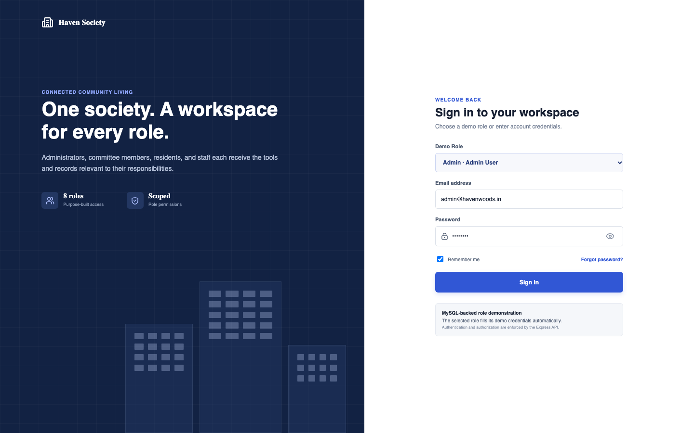

A project report submitted in partial fulfillment of the requirements for the award of the degree of
in
Under the esteemed guidance of
GUIDE NAME
K L (Deemed to be) University
Academic Year 2026-2027
We hereby declare that the project report entitled “Design and Development of an Integrated Society Management System” is a record of bona fide work carried out by the undersigned students in partial fulfillment of the requirements for the award of the degree of Bachelor of Technology at K L (Deemed to be) University.
We further declare that the implementation, analysis, diagrams, testing material, and conclusions presented in this report are based on our project work. Material obtained from documentation and books has been acknowledged in the references. This report has not been submitted, in whole or in part, for the award of another degree or diploma.
| Student | Registration Number |
|---|---|
| STUDENT NAME 1 | ROLL NUMBER 1 |
| STUDENT NAME 2 | ROLL NUMBER 2 |
| STUDENT NAME 3 | ROLL NUMBER 3 |
This is to certify that the project report entitled “Design and Development of an Integrated Society Management System” is a bona fide record of work completed by STUDENT NAME 1 (ROLL NUMBER 1), STUDENT NAME 2 (ROLL NUMBER 2), STUDENT NAME 3 (ROLL NUMBER 3) under my supervision during the academic year 2026-2027.
The work presented satisfies the academic requirements of the project and demonstrates the design, implementation, and evaluation of a full-stack society management application using React, Express, and MySQL.
We express our sincere gratitude to our guide, GUIDE NAME, for continuous guidance, technical review, and constructive suggestions throughout the design and development of Haven Society Management. The project benefited from careful discussions about database integrity, secure authentication, role separation, and usable interface design.
We thank the faculty and staff of Department of Computer Science Engineering and Department of Computer Science and Information Technology at K L (Deemed to be) University for providing the facilities and academic environment required to complete this work. We also acknowledge our classmates and reviewers whose feedback helped identify practical workflows for administrators, residents, security personnel, and maintenance teams.
Finally, we thank our families and friends for their patience and support. Their encouragement helped us complete the implementation, documentation, and verification activities represented in this report.
| STUDENT NAME 1 | ROLL NUMBER 1 |
| STUDENT NAME 2 | ROLL NUMBER 2 |
| STUDENT NAME 3 | ROLL NUMBER 3 |
Haven Society Management is a full-stack database management application that brings core residential-community operations into one secure, role-aware web system.
The platform manages flats, residents, visitors, staff, maintenance bills, payments, complaints, notices, amenities, and amenity bookings. A React single-page application provides reusable data tables, forms, status indicators, dashboards, and responsive navigation. An Express API validates JSON requests, authenticates users with JSON Web Tokens, applies role and record-ownership rules, and executes parameterized queries against MySQL.
The database schema uses primary keys, foreign keys, enumerated statuses, uniqueness constraints, and transaction boundaries to preserve consistency. Passwords are stored as bcrypt hashes; database credentials remain on the server; and residents receive scoped access to records associated with their identity or flat. Administrators receive aggregate dashboards rendered with Recharts, while operational roles receive focused views suited to their responsibilities.
The implementation demonstrates how a declarative resource model can reduce repetition across ten CRUD modules without weakening authorization. The project includes setup scripts, seed data, a backward-compatible migration, and a Postman collection covering database health, authentication, and a complete notice lifecycle. The result is a maintainable academic DBMS project with a clear path toward notifications, payment gateways, audit trails, and production deployment.
Keywords: Society management, React, Express, MySQL, JWT, RBAC, CRUD, relational database, responsive dashboard.
| No. | Chapter | Topics | Pages |
|---|---|---|---|
| 1 | Introduction | 1.1 Background of Digital Society Administration 1.2 Problem Statement 1.3 Scope of the Project 1.4 Project Objectives 1.5 Importance of the Application 1.6 Target Users and Stakeholders 1.7 Existing Manual Process 1.8 Proposed Digital Solution 1.9 Feasibility Analysis 1.10 Benefits and Expected Outcomes 1.11 Chapter Summary | 5–15 |
| 2 | System Requirements | 2.1 Hardware Requirements 2.2 Software Requirements 2.3 Development Tools and Frameworks 2.4 Functional Requirements 2.5 Non-Functional Requirements 2.6 Requirement Traceability Summary | 16–21 |
| 3 | Technology Stack | 3.1 Frontend: React and Vite 3.2 Frontend Routing and Component Model 3.3 CSS and Responsive Interface 3.4 Backend: Node.js and Express 3.5 REST API Design 3.6 Database: MySQL 3.7 Authentication with JWT and bcrypt 3.8 Data Visualization with Recharts 3.9 Version Control and Collaboration 3.10 External Libraries and Services 3.11 Technology Selection Summary | 22–32 |
| 4 | System Architecture | 4.1 High-Level Architecture Diagram 4.2 Layered Architecture and Request Flow 4.3 Security and Authorization Architecture 4.4 Deployment Architecture | 33–36 |
| 5 | Design | 5.1 Entity Relationship Diagram and Database Schema | 37–37 |
| 6 | Implementation | 6.1 Module-Wise Implementation Overview 6.2 Flat and Resident Management 6.3 Visitor and Staff Management 6.4 Maintenance Billing and Payments 6.5 Complaint and Notice Management 6.6 Amenity and Booking Management 6.7 Frontend Rendering and State Management 6.8 API Integration 6.9 Authentication and Authorization 6.10 Validation, Transactions, and Error Handling | 38–47 |
| 7 | Features | 7.1 Main Feature Inventory 7.2 Role-Specific Dashboards 7.3 Reusable CRUD Experience 7.4 Search, Filters, and Status Views 7.5 Resident Self-Service 7.6 Administrative Analytics 7.7 Security and Data Protection 7.8 Accessibility and Responsive Design | 48–55 |
| 8 | Testing | 8.1 Testing Strategy 8.2 Postman API Testing 8.3 Authentication and Authorization Tests 8.4 Integration Testing 8.5 Database Constraint Testing 8.6 Frontend and Responsive Testing 8.7 Test Tools and Environments 8.8 Test Cases and Expected Results 8.9 Quality Summary and Residual Risks | 56–64 |
| No. | Chapter | Topics | Pages |
|---|---|---|---|
| 9 | Deployment | 9.1 Deployment Overview 9.2 Local Database Preparation 9.3 Environment Configuration 9.4 Frontend Production Build 9.5 Backend Service Deployment 9.6 Database Migration and Backup 9.7 CI/CD Pipeline Design 9.8 Security Hardening and Monitoring 9.9 Rollback and Recovery Procedure | 65–73 |
| 10 | Challenges and Limitations | 10.1 Issues Faced During Development 10.2 Relational Data and Referential Integrity 10.3 Role Permission Complexity 10.4 Frontend State Synchronization 10.5 Authentication and Session Challenges 10.6 Solutions Applied 10.7 Current Limitations 10.8 Known Risks and Mitigations 10.9 Chapter Summary | 74–82 |
| 11 | Future Enhancements | 11.1 Planned Features 11.2 Digital Payment Gateway Integration 11.3 Notification and Communication Services 11.4 Mobile and Progressive Web Application 11.5 Advanced Analytics and Automation 11.6 Integration and Optimization Roadmap | 83–88 |
| 12 | Conclusion | 12.1 Project Summary 12.2 Objectives Achieved 12.3 Technical Achievements 12.4 Functional Outcomes 12.5 Security and Reliability Outcomes 12.6 User Experience Outcomes 12.7 Skills Learned During Development 12.8 Social and Operational Impact 12.9 Final Conclusion | 89–97 |
| 13 | References | 13.1 Books and Standards 13.2 Documentation and Technical Resources | 98–99 |
| 14 | Appendices | 14.1 Application Screenshots 14.2 Sample Code Snippets 14.3 Installation and Setup Instructions 14.4 User Manual 14.5 API Catalogue and Test Data 14.6 Review Forms and Signatures | 100–105 |
| API | Application Programming Interface | JWT | JSON Web Token |
| RBAC | Role-Based Access Control | CRUD | Create, Read, Update, Delete |
| DBMS | Database Management System | SPA | Single-Page Application |
| UI/UX | User Interface / User Experience | CI/CD | Continuous Integration / Delivery |
The application replaces fragmented registers and spreadsheets with a unified operational view of flats, residents, visitors, staff, maintenance, payments, complaints, notices, amenities, and bookings. The project is designed for residential communities where administrators require reliable records and residents need limited self-service access. This section focuses on background of digital society administration and relates that subject directly to the implemented Haven codebase.
The design decision is evaluated through the principle of centralize society records. Browser controls improve usability, but the API remains the trust boundary. Requests are accepted only after identity, role, resource, and—where applicable—record ownership have been evaluated. This avoids treating hidden buttons as a security mechanism.
From a database perspective, background of digital society administration depends on explicit keys, constrained status values, and predictable relationships. The use of MySQL transactions for multi-record operations prevents partial writes, while parameter binding protects user values from being interpreted as SQL. These choices support improve visibility and accountability without introducing unnecessary architectural layers.
Page outcome: Background of Digital Society Administration is documented as part of the implemented system and is traceable to a code, schema, configuration, or test artifact.
The application replaces fragmented registers and spreadsheets with a unified operational view of flats, residents, visitors, staff, maintenance, payments, complaints, notices, amenities, and bookings. The project is designed for residential communities where administrators require reliable records and residents need limited self-service access. This section focuses on problem statement and relates that subject directly to the implemented Haven codebase.
The design decision is evaluated through the principle of reduce duplicate manual entry. Browser controls improve usability, but the API remains the trust boundary. Requests are accepted only after identity, role, resource, and—where applicable—record ownership have been evaluated. This avoids treating hidden buttons as a security mechanism.
From a database perspective, problem statement depends on explicit keys, constrained status values, and predictable relationships. The use of MySQL transactions for multi-record operations prevents partial writes, while parameter binding protects user values from being interpreted as SQL. These choices support support distinct operational roles without introducing unnecessary architectural layers.
Page outcome: Problem Statement is documented as part of the implemented system and is traceable to a code, schema, configuration, or test artifact.
The application replaces fragmented registers and spreadsheets with a unified operational view of flats, residents, visitors, staff, maintenance, payments, complaints, notices, amenities, and bookings. The project is designed for residential communities where administrators require reliable records and residents need limited self-service access. This section focuses on scope of the project and relates that subject directly to the implemented Haven codebase.
The design decision is evaluated through the principle of improve visibility and accountability. Browser controls improve usability, but the API remains the trust boundary. Requests are accepted only after identity, role, resource, and—where applicable—record ownership have been evaluated. This avoids treating hidden buttons as a security mechanism.
From a database perspective, scope of the project depends on explicit keys, constrained status values, and predictable relationships. The use of MySQL transactions for multi-record operations prevents partial writes, while parameter binding protects user values from being interpreted as SQL. These choices support preserve resident privacy without introducing unnecessary architectural layers.
Page outcome: Scope of the Project is documented as part of the implemented system and is traceable to a code, schema, configuration, or test artifact.
The application replaces fragmented registers and spreadsheets with a unified operational view of flats, residents, visitors, staff, maintenance, payments, complaints, notices, amenities, and bookings. The project is designed for residential communities where administrators require reliable records and residents need limited self-service access. This section focuses on project objectives and relates that subject directly to the implemented Haven codebase.
The design decision is evaluated through the principle of support distinct operational roles. Browser controls improve usability, but the API remains the trust boundary. Requests are accepted only after identity, role, resource, and—where applicable—record ownership have been evaluated. This avoids treating hidden buttons as a security mechanism.
From a database perspective, project objectives depends on explicit keys, constrained status values, and predictable relationships. The use of MySQL transactions for multi-record operations prevents partial writes, while parameter binding protects user values from being interpreted as SQL. These choices support centralize society records without introducing unnecessary architectural layers.
Page outcome: Project Objectives is documented as part of the implemented system and is traceable to a code, schema, configuration, or test artifact.
The application replaces fragmented registers and spreadsheets with a unified operational view of flats, residents, visitors, staff, maintenance, payments, complaints, notices, amenities, and bookings. The project is designed for residential communities where administrators require reliable records and residents need limited self-service access. This section focuses on importance of the application and relates that subject directly to the implemented Haven codebase.
The design decision is evaluated through the principle of preserve resident privacy. Browser controls improve usability, but the API remains the trust boundary. Requests are accepted only after identity, role, resource, and—where applicable—record ownership have been evaluated. This avoids treating hidden buttons as a security mechanism.
From a database perspective, importance of the application depends on explicit keys, constrained status values, and predictable relationships. The use of MySQL transactions for multi-record operations prevents partial writes, while parameter binding protects user values from being interpreted as SQL. These choices support reduce duplicate manual entry without introducing unnecessary architectural layers.
Page outcome: Importance of the Application is documented as part of the implemented system and is traceable to a code, schema, configuration, or test artifact.
The application replaces fragmented registers and spreadsheets with a unified operational view of flats, residents, visitors, staff, maintenance, payments, complaints, notices, amenities, and bookings. The project is designed for residential communities where administrators require reliable records and residents need limited self-service access. This section focuses on target users and stakeholders and relates that subject directly to the implemented Haven codebase.
The design decision is evaluated through the principle of centralize society records. Browser controls improve usability, but the API remains the trust boundary. Requests are accepted only after identity, role, resource, and—where applicable—record ownership have been evaluated. This avoids treating hidden buttons as a security mechanism.
From a database perspective, target users and stakeholders depends on explicit keys, constrained status values, and predictable relationships. The use of MySQL transactions for multi-record operations prevents partial writes, while parameter binding protects user values from being interpreted as SQL. These choices support improve visibility and accountability without introducing unnecessary architectural layers.
Page outcome: Target Users and Stakeholders is documented as part of the implemented system and is traceable to a code, schema, configuration, or test artifact.
The application replaces fragmented registers and spreadsheets with a unified operational view of flats, residents, visitors, staff, maintenance, payments, complaints, notices, amenities, and bookings. The project is designed for residential communities where administrators require reliable records and residents need limited self-service access. This section focuses on existing manual process and relates that subject directly to the implemented Haven codebase.
The design decision is evaluated through the principle of reduce duplicate manual entry. Browser controls improve usability, but the API remains the trust boundary. Requests are accepted only after identity, role, resource, and—where applicable—record ownership have been evaluated. This avoids treating hidden buttons as a security mechanism.
From a database perspective, existing manual process depends on explicit keys, constrained status values, and predictable relationships. The use of MySQL transactions for multi-record operations prevents partial writes, while parameter binding protects user values from being interpreted as SQL. These choices support support distinct operational roles without introducing unnecessary architectural layers.
Page outcome: Existing Manual Process is documented as part of the implemented system and is traceable to a code, schema, configuration, or test artifact.
The application replaces fragmented registers and spreadsheets with a unified operational view of flats, residents, visitors, staff, maintenance, payments, complaints, notices, amenities, and bookings. The project is designed for residential communities where administrators require reliable records and residents need limited self-service access. This section focuses on proposed digital solution and relates that subject directly to the implemented Haven codebase.
The design decision is evaluated through the principle of improve visibility and accountability. Browser controls improve usability, but the API remains the trust boundary. Requests are accepted only after identity, role, resource, and—where applicable—record ownership have been evaluated. This avoids treating hidden buttons as a security mechanism.
From a database perspective, proposed digital solution depends on explicit keys, constrained status values, and predictable relationships. The use of MySQL transactions for multi-record operations prevents partial writes, while parameter binding protects user values from being interpreted as SQL. These choices support preserve resident privacy without introducing unnecessary architectural layers.
Page outcome: Proposed Digital Solution is documented as part of the implemented system and is traceable to a code, schema, configuration, or test artifact.
The application replaces fragmented registers and spreadsheets with a unified operational view of flats, residents, visitors, staff, maintenance, payments, complaints, notices, amenities, and bookings. The project is designed for residential communities where administrators require reliable records and residents need limited self-service access. This section focuses on feasibility analysis and relates that subject directly to the implemented Haven codebase.
The design decision is evaluated through the principle of support distinct operational roles. Browser controls improve usability, but the API remains the trust boundary. Requests are accepted only after identity, role, resource, and—where applicable—record ownership have been evaluated. This avoids treating hidden buttons as a security mechanism.
From a database perspective, feasibility analysis depends on explicit keys, constrained status values, and predictable relationships. The use of MySQL transactions for multi-record operations prevents partial writes, while parameter binding protects user values from being interpreted as SQL. These choices support centralize society records without introducing unnecessary architectural layers.
Page outcome: Feasibility Analysis is documented as part of the implemented system and is traceable to a code, schema, configuration, or test artifact.
The application replaces fragmented registers and spreadsheets with a unified operational view of flats, residents, visitors, staff, maintenance, payments, complaints, notices, amenities, and bookings. The project is designed for residential communities where administrators require reliable records and residents need limited self-service access. This section focuses on benefits and expected outcomes and relates that subject directly to the implemented Haven codebase.
The design decision is evaluated through the principle of preserve resident privacy. Browser controls improve usability, but the API remains the trust boundary. Requests are accepted only after identity, role, resource, and—where applicable—record ownership have been evaluated. This avoids treating hidden buttons as a security mechanism.
From a database perspective, benefits and expected outcomes depends on explicit keys, constrained status values, and predictable relationships. The use of MySQL transactions for multi-record operations prevents partial writes, while parameter binding protects user values from being interpreted as SQL. These choices support reduce duplicate manual entry without introducing unnecessary architectural layers.
Page outcome: Benefits and Expected Outcomes is documented as part of the implemented system and is traceable to a code, schema, configuration, or test artifact.
The application replaces fragmented registers and spreadsheets with a unified operational view of flats, residents, visitors, staff, maintenance, payments, complaints, notices, amenities, and bookings. The project is designed for residential communities where administrators require reliable records and residents need limited self-service access. This section focuses on chapter summary and relates that subject directly to the implemented Haven codebase.
The design decision is evaluated through the principle of centralize society records. Browser controls improve usability, but the API remains the trust boundary. Requests are accepted only after identity, role, resource, and—where applicable—record ownership have been evaluated. This avoids treating hidden buttons as a security mechanism.
From a database perspective, chapter summary depends on explicit keys, constrained status values, and predictable relationships. The use of MySQL transactions for multi-record operations prevents partial writes, while parameter binding protects user values from being interpreted as SQL. These choices support improve visibility and accountability without introducing unnecessary architectural layers.
Page outcome: Chapter Summary is documented as part of the implemented system and is traceable to a code, schema, configuration, or test artifact.
Requirements were derived from the implemented routes, forms, database constraints, and role rules. They distinguish mandatory business behavior from quality attributes such as security, responsiveness, maintainability, consistency, and recoverability. This section focuses on hardware requirements and relates that subject directly to the implemented Haven codebase.
The design decision is evaluated through the principle of authenticated access. Browser controls improve usability, but the API remains the trust boundary. Requests are accepted only after identity, role, resource, and—where applicable—record ownership have been evaluated. This avoids treating hidden buttons as a security mechanism.
From a database perspective, hardware requirements depends on explicit keys, constrained status values, and predictable relationships. The use of MySQL transactions for multi-record operations prevents partial writes, while parameter binding protects user values from being interpreted as SQL. These choices support responsive browser interface without introducing unnecessary architectural layers.
| Component | Minimum | Recommended |
|---|---|---|
| Processor | Dual-core 2 GHz | Modern 4-core CPU |
| Memory | 8 GB RAM | 16 GB RAM |
| Storage | 2 GB free | SSD with 10 GB free |
| Network | Localhost | Stable broadband for deployment |
| Client | 1366 × 768 display | Full HD display |
Page outcome: Hardware Requirements is documented as part of the implemented system and is traceable to a code, schema, configuration, or test artifact.
Requirements were derived from the implemented routes, forms, database constraints, and role rules. They distinguish mandatory business behavior from quality attributes such as security, responsiveness, maintainability, consistency, and recoverability. This section focuses on software requirements and relates that subject directly to the implemented Haven codebase.
The design decision is evaluated through the principle of persistent relational storage. Browser controls improve usability, but the API remains the trust boundary. Requests are accepted only after identity, role, resource, and—where applicable—record ownership have been evaluated. This avoids treating hidden buttons as a security mechanism.
From a database perspective, software requirements depends on explicit keys, constrained status values, and predictable relationships. The use of MySQL transactions for multi-record operations prevents partial writes, while parameter binding protects user values from being interpreted as SQL. These choices support clear validation feedback without introducing unnecessary architectural layers.
| Software | Role |
|---|---|
| Node.js 20+ | Frontend tooling and API runtime |
| MySQL 8 | Relational persistence and constraints |
| Modern browser | React client execution |
| VS Code | Development and debugging |
| Postman | Repeatable API checks |
| Git | Version history and collaboration |
Page outcome: Software Requirements is documented as part of the implemented system and is traceable to a code, schema, configuration, or test artifact.
Requirements were derived from the implemented routes, forms, database constraints, and role rules. They distinguish mandatory business behavior from quality attributes such as security, responsiveness, maintainability, consistency, and recoverability. This section focuses on development tools and frameworks and relates that subject directly to the implemented Haven codebase.
The design decision is evaluated through the principle of responsive browser interface. Browser controls improve usability, but the API remains the trust boundary. Requests are accepted only after identity, role, resource, and—where applicable—record ownership have been evaluated. This avoids treating hidden buttons as a security mechanism.
From a database perspective, development tools and frameworks depends on explicit keys, constrained status values, and predictable relationships. The use of MySQL transactions for multi-record operations prevents partial writes, while parameter binding protects user values from being interpreted as SQL. These choices support recoverable deployment configuration without introducing unnecessary architectural layers.
Page outcome: Development Tools and Frameworks is documented as part of the implemented system and is traceable to a code, schema, configuration, or test artifact.
Requirements were derived from the implemented routes, forms, database constraints, and role rules. They distinguish mandatory business behavior from quality attributes such as security, responsiveness, maintainability, consistency, and recoverability. This section focuses on functional requirements and relates that subject directly to the implemented Haven codebase.
The design decision is evaluated through the principle of clear validation feedback. Browser controls improve usability, but the API remains the trust boundary. Requests are accepted only after identity, role, resource, and—where applicable—record ownership have been evaluated. This avoids treating hidden buttons as a security mechanism.
From a database perspective, functional requirements depends on explicit keys, constrained status values, and predictable relationships. The use of MySQL transactions for multi-record operations prevents partial writes, while parameter binding protects user values from being interpreted as SQL. These choices support authenticated access without introducing unnecessary architectural layers.
Page outcome: Functional Requirements is documented as part of the implemented system and is traceable to a code, schema, configuration, or test artifact.
Requirements were derived from the implemented routes, forms, database constraints, and role rules. They distinguish mandatory business behavior from quality attributes such as security, responsiveness, maintainability, consistency, and recoverability. This section focuses on non-functional requirements and relates that subject directly to the implemented Haven codebase.
The design decision is evaluated through the principle of recoverable deployment configuration. Browser controls improve usability, but the API remains the trust boundary. Requests are accepted only after identity, role, resource, and—where applicable—record ownership have been evaluated. This avoids treating hidden buttons as a security mechanism.
From a database perspective, non-functional requirements depends on explicit keys, constrained status values, and predictable relationships. The use of MySQL transactions for multi-record operations prevents partial writes, while parameter binding protects user values from being interpreted as SQL. These choices support persistent relational storage without introducing unnecessary architectural layers.
Page outcome: Non-Functional Requirements is documented as part of the implemented system and is traceable to a code, schema, configuration, or test artifact.
Requirements were derived from the implemented routes, forms, database constraints, and role rules. They distinguish mandatory business behavior from quality attributes such as security, responsiveness, maintainability, consistency, and recoverability. This section focuses on requirement traceability summary and relates that subject directly to the implemented Haven codebase.
The design decision is evaluated through the principle of authenticated access. Browser controls improve usability, but the API remains the trust boundary. Requests are accepted only after identity, role, resource, and—where applicable—record ownership have been evaluated. This avoids treating hidden buttons as a security mechanism.
From a database perspective, requirement traceability summary depends on explicit keys, constrained status values, and predictable relationships. The use of MySQL transactions for multi-record operations prevents partial writes, while parameter binding protects user values from being interpreted as SQL. These choices support responsive browser interface without introducing unnecessary architectural layers.
Page outcome: Requirement Traceability Summary is documented as part of the implemented system and is traceable to a code, schema, configuration, or test artifact.
The implementation uses React 19.2.8, React Router 7.18.3, Vite 8.2.2, Express 5.2.1, MySQL through mysql2, JSON Web Tokens, bcryptjs, Lucide icons, and Recharts. The selected stack keeps the browser, API, and relational database responsibilities explicit. This section focuses on frontend: react and vite and relates that subject directly to the implemented Haven codebase.
The design decision is evaluated through the principle of component reuse. Browser controls improve usability, but the API remains the trust boundary. Requests are accepted only after identity, role, resource, and—where applicable—record ownership have been evaluated. This avoids treating hidden buttons as a security mechanism.
From a database perspective, frontend: react and vite depends on explicit keys, constrained status values, and predictable relationships. The use of MySQL transactions for multi-record operations prevents partial writes, while parameter binding protects user values from being interpreted as SQL. These choices support parameterized sql without introducing unnecessary architectural layers.
Page outcome: Frontend: React and Vite is documented as part of the implemented system and is traceable to a code, schema, configuration, or test artifact.
The implementation uses React 19.2.8, React Router 7.18.3, Vite 8.2.2, Express 5.2.1, MySQL through mysql2, JSON Web Tokens, bcryptjs, Lucide icons, and Recharts. The selected stack keeps the browser, API, and relational database responsibilities explicit. This section focuses on frontend routing and component model and relates that subject directly to the implemented Haven codebase.
The design decision is evaluated through the principle of non-blocking http handling. Browser controls improve usability, but the API remains the trust boundary. Requests are accepted only after identity, role, resource, and—where applicable—record ownership have been evaluated. This avoids treating hidden buttons as a security mechanism.
From a database perspective, frontend routing and component model depends on explicit keys, constrained status values, and predictable relationships. The use of MySQL transactions for multi-record operations prevents partial writes, while parameter binding protects user values from being interpreted as SQL. These choices support declarative resource metadata without introducing unnecessary architectural layers.
Page outcome: Frontend Routing and Component Model is documented as part of the implemented system and is traceable to a code, schema, configuration, or test artifact.
The implementation uses React 19.2.8, React Router 7.18.3, Vite 8.2.2, Express 5.2.1, MySQL through mysql2, JSON Web Tokens, bcryptjs, Lucide icons, and Recharts. The selected stack keeps the browser, API, and relational database responsibilities explicit. This section focuses on css and responsive interface and relates that subject directly to the implemented Haven codebase.
The design decision is evaluated through the principle of parameterized sql. Browser controls improve usability, but the API remains the trust boundary. Requests are accepted only after identity, role, resource, and—where applicable—record ownership have been evaluated. This avoids treating hidden buttons as a security mechanism.
From a database perspective, css and responsive interface depends on explicit keys, constrained status values, and predictable relationships. The use of MySQL transactions for multi-record operations prevents partial writes, while parameter binding protects user values from being interpreted as SQL. These choices support reproducible package versions without introducing unnecessary architectural layers.
Page outcome: CSS and Responsive Interface is documented as part of the implemented system and is traceable to a code, schema, configuration, or test artifact.
The implementation uses React 19.2.8, React Router 7.18.3, Vite 8.2.2, Express 5.2.1, MySQL through mysql2, JSON Web Tokens, bcryptjs, Lucide icons, and Recharts. The selected stack keeps the browser, API, and relational database responsibilities explicit. This section focuses on backend: node.js and express and relates that subject directly to the implemented Haven codebase.
The design decision is evaluated through the principle of declarative resource metadata. Browser controls improve usability, but the API remains the trust boundary. Requests are accepted only after identity, role, resource, and—where applicable—record ownership have been evaluated. This avoids treating hidden buttons as a security mechanism.
From a database perspective, backend: node.js and express depends on explicit keys, constrained status values, and predictable relationships. The use of MySQL transactions for multi-record operations prevents partial writes, while parameter binding protects user values from being interpreted as SQL. These choices support component reuse without introducing unnecessary architectural layers.
Page outcome: Backend: Node.js and Express is documented as part of the implemented system and is traceable to a code, schema, configuration, or test artifact.
The implementation uses React 19.2.8, React Router 7.18.3, Vite 8.2.2, Express 5.2.1, MySQL through mysql2, JSON Web Tokens, bcryptjs, Lucide icons, and Recharts. The selected stack keeps the browser, API, and relational database responsibilities explicit. This section focuses on rest api design and relates that subject directly to the implemented Haven codebase.
The design decision is evaluated through the principle of reproducible package versions. Browser controls improve usability, but the API remains the trust boundary. Requests are accepted only after identity, role, resource, and—where applicable—record ownership have been evaluated. This avoids treating hidden buttons as a security mechanism.
From a database perspective, rest api design depends on explicit keys, constrained status values, and predictable relationships. The use of MySQL transactions for multi-record operations prevents partial writes, while parameter binding protects user values from being interpreted as SQL. These choices support non-blocking http handling without introducing unnecessary architectural layers.
Page outcome: REST API Design is documented as part of the implemented system and is traceable to a code, schema, configuration, or test artifact.
The implementation uses React 19.2.8, React Router 7.18.3, Vite 8.2.2, Express 5.2.1, MySQL through mysql2, JSON Web Tokens, bcryptjs, Lucide icons, and Recharts. The selected stack keeps the browser, API, and relational database responsibilities explicit. This section focuses on database: mysql and relates that subject directly to the implemented Haven codebase.
The design decision is evaluated through the principle of component reuse. Browser controls improve usability, but the API remains the trust boundary. Requests are accepted only after identity, role, resource, and—where applicable—record ownership have been evaluated. This avoids treating hidden buttons as a security mechanism.
From a database perspective, database: mysql depends on explicit keys, constrained status values, and predictable relationships. The use of MySQL transactions for multi-record operations prevents partial writes, while parameter binding protects user values from being interpreted as SQL. These choices support parameterized sql without introducing unnecessary architectural layers.
Page outcome: Database: MySQL is documented as part of the implemented system and is traceable to a code, schema, configuration, or test artifact.
The implementation uses React 19.2.8, React Router 7.18.3, Vite 8.2.2, Express 5.2.1, MySQL through mysql2, JSON Web Tokens, bcryptjs, Lucide icons, and Recharts. The selected stack keeps the browser, API, and relational database responsibilities explicit. This section focuses on authentication with jwt and bcrypt and relates that subject directly to the implemented Haven codebase.
The design decision is evaluated through the principle of non-blocking http handling. Browser controls improve usability, but the API remains the trust boundary. Requests are accepted only after identity, role, resource, and—where applicable—record ownership have been evaluated. This avoids treating hidden buttons as a security mechanism.
From a database perspective, authentication with jwt and bcrypt depends on explicit keys, constrained status values, and predictable relationships. The use of MySQL transactions for multi-record operations prevents partial writes, while parameter binding protects user values from being interpreted as SQL. These choices support declarative resource metadata without introducing unnecessary architectural layers.
Page outcome: Authentication with JWT and bcrypt is documented as part of the implemented system and is traceable to a code, schema, configuration, or test artifact.
The implementation uses React 19.2.8, React Router 7.18.3, Vite 8.2.2, Express 5.2.1, MySQL through mysql2, JSON Web Tokens, bcryptjs, Lucide icons, and Recharts. The selected stack keeps the browser, API, and relational database responsibilities explicit. This section focuses on data visualization with recharts and relates that subject directly to the implemented Haven codebase.
The design decision is evaluated through the principle of parameterized sql. Browser controls improve usability, but the API remains the trust boundary. Requests are accepted only after identity, role, resource, and—where applicable—record ownership have been evaluated. This avoids treating hidden buttons as a security mechanism.
From a database perspective, data visualization with recharts depends on explicit keys, constrained status values, and predictable relationships. The use of MySQL transactions for multi-record operations prevents partial writes, while parameter binding protects user values from being interpreted as SQL. These choices support reproducible package versions without introducing unnecessary architectural layers.
Page outcome: Data Visualization with Recharts is documented as part of the implemented system and is traceable to a code, schema, configuration, or test artifact.
The implementation uses React 19.2.8, React Router 7.18.3, Vite 8.2.2, Express 5.2.1, MySQL through mysql2, JSON Web Tokens, bcryptjs, Lucide icons, and Recharts. The selected stack keeps the browser, API, and relational database responsibilities explicit. This section focuses on version control and collaboration and relates that subject directly to the implemented Haven codebase.
The design decision is evaluated through the principle of declarative resource metadata. Browser controls improve usability, but the API remains the trust boundary. Requests are accepted only after identity, role, resource, and—where applicable—record ownership have been evaluated. This avoids treating hidden buttons as a security mechanism.
From a database perspective, version control and collaboration depends on explicit keys, constrained status values, and predictable relationships. The use of MySQL transactions for multi-record operations prevents partial writes, while parameter binding protects user values from being interpreted as SQL. These choices support component reuse without introducing unnecessary architectural layers.
Page outcome: Version Control and Collaboration is documented as part of the implemented system and is traceable to a code, schema, configuration, or test artifact.
The implementation uses React 19.2.8, React Router 7.18.3, Vite 8.2.2, Express 5.2.1, MySQL through mysql2, JSON Web Tokens, bcryptjs, Lucide icons, and Recharts. The selected stack keeps the browser, API, and relational database responsibilities explicit. This section focuses on external libraries and services and relates that subject directly to the implemented Haven codebase.
The design decision is evaluated through the principle of reproducible package versions. Browser controls improve usability, but the API remains the trust boundary. Requests are accepted only after identity, role, resource, and—where applicable—record ownership have been evaluated. This avoids treating hidden buttons as a security mechanism.
From a database perspective, external libraries and services depends on explicit keys, constrained status values, and predictable relationships. The use of MySQL transactions for multi-record operations prevents partial writes, while parameter binding protects user values from being interpreted as SQL. These choices support non-blocking http handling without introducing unnecessary architectural layers.
Page outcome: External Libraries and Services is documented as part of the implemented system and is traceable to a code, schema, configuration, or test artifact.
The implementation uses React 19.2.8, React Router 7.18.3, Vite 8.2.2, Express 5.2.1, MySQL through mysql2, JSON Web Tokens, bcryptjs, Lucide icons, and Recharts. The selected stack keeps the browser, API, and relational database responsibilities explicit. This section focuses on technology selection summary and relates that subject directly to the implemented Haven codebase.
The design decision is evaluated through the principle of component reuse. Browser controls improve usability, but the API remains the trust boundary. Requests are accepted only after identity, role, resource, and—where applicable—record ownership have been evaluated. This avoids treating hidden buttons as a security mechanism.
From a database perspective, technology selection summary depends on explicit keys, constrained status values, and predictable relationships. The use of MySQL transactions for multi-record operations prevents partial writes, while parameter binding protects user values from being interpreted as SQL. These choices support parameterized sql without introducing unnecessary architectural layers.
Page outcome: Technology Selection Summary is documented as part of the implemented system and is traceable to a code, schema, configuration, or test artifact.
Haven follows a three-tier web architecture. The React single-page application calls an Express REST API; the API authenticates requests, applies role and ownership rules, and executes parameterized statements against MySQL. The browser never receives database credentials. This section focuses on high-level architecture diagram and relates that subject directly to the implemented Haven codebase.
The design decision is evaluated through the principle of presentation layer. Browser controls improve usability, but the API remains the trust boundary. Requests are accepted only after identity, role, resource, and—where applicable—record ownership have been evaluated. This avoids treating hidden buttons as a security mechanism.
From a database perspective, high-level architecture diagram depends on explicit keys, constrained status values, and predictable relationships. The use of MySQL transactions for multi-record operations prevents partial writes, while parameter binding protects user values from being interpreted as SQL. These choices support authorization boundary without introducing unnecessary architectural layers.
Page outcome: High-Level Architecture Diagram is documented as part of the implemented system and is traceable to a code, schema, configuration, or test artifact.
Haven follows a three-tier web architecture. The React single-page application calls an Express REST API; the API authenticates requests, applies role and ownership rules, and executes parameterized statements against MySQL. The browser never receives database credentials. This section focuses on layered architecture and request flow and relates that subject directly to the implemented Haven codebase.
The design decision is evaluated through the principle of application service layer. Browser controls improve usability, but the API remains the trust boundary. Requests are accepted only after identity, role, resource, and—where applicable—record ownership have been evaluated. This avoids treating hidden buttons as a security mechanism.
From a database perspective, layered architecture and request flow depends on explicit keys, constrained status values, and predictable relationships. The use of MySQL transactions for multi-record operations prevents partial writes, while parameter binding protects user values from being interpreted as SQL. These choices support relational persistence layer without introducing unnecessary architectural layers.
Page outcome: Layered Architecture and Request Flow is documented as part of the implemented system and is traceable to a code, schema, configuration, or test artifact.
Haven follows a three-tier web architecture. The React single-page application calls an Express REST API; the API authenticates requests, applies role and ownership rules, and executes parameterized statements against MySQL. The browser never receives database credentials. This section focuses on security and authorization architecture and relates that subject directly to the implemented Haven codebase.
The design decision is evaluated through the principle of authorization boundary. Browser controls improve usability, but the API remains the trust boundary. Requests are accepted only after identity, role, resource, and—where applicable—record ownership have been evaluated. This avoids treating hidden buttons as a security mechanism.
From a database perspective, security and authorization architecture depends on explicit keys, constrained status values, and predictable relationships. The use of MySQL transactions for multi-record operations prevents partial writes, while parameter binding protects user values from being interpreted as SQL. These choices support operational health endpoint without introducing unnecessary architectural layers.
Page outcome: Security and Authorization Architecture is documented as part of the implemented system and is traceable to a code, schema, configuration, or test artifact.
Haven follows a three-tier web architecture. The React single-page application calls an Express REST API; the API authenticates requests, applies role and ownership rules, and executes parameterized statements against MySQL. The browser never receives database credentials. This section focuses on deployment architecture and relates that subject directly to the implemented Haven codebase.
The design decision is evaluated through the principle of relational persistence layer. Browser controls improve usability, but the API remains the trust boundary. Requests are accepted only after identity, role, resource, and—where applicable—record ownership have been evaluated. This avoids treating hidden buttons as a security mechanism.
From a database perspective, deployment architecture depends on explicit keys, constrained status values, and predictable relationships. The use of MySQL transactions for multi-record operations prevents partial writes, while parameter binding protects user values from being interpreted as SQL. These choices support presentation layer without introducing unnecessary architectural layers.
Page outcome: Deployment Architecture is documented as part of the implemented system and is traceable to a code, schema, configuration, or test artifact.
The relational schema contains flats, residents, staff, visitors, maintenance bills, payments, complaints, notices, amenities, amenity bookings, and application users. Foreign keys preserve identity and ownership while unique keys prevent duplicate business records. This section focuses on entity relationship diagram and database schema and relates that subject directly to the implemented Haven codebase.
The design decision is evaluated through the principle of primary and foreign keys. Browser controls improve usability, but the API remains the trust boundary. Requests are accepted only after identity, role, resource, and—where applicable—record ownership have been evaluated. This avoids treating hidden buttons as a security mechanism.
From a database perspective, entity relationship diagram and database schema depends on explicit keys, constrained status values, and predictable relationships. The use of MySQL transactions for multi-record operations prevents partial writes, while parameter binding protects user values from being interpreted as SQL. These choices support enumerated status values without introducing unnecessary architectural layers.
Page outcome: Entity Relationship Diagram and Database Schema is documented as part of the implemented system and is traceable to a code, schema, configuration, or test artifact.
Implementation is organized around shared CRUD abstractions. Frontend resource metadata defines fields, columns, filters, and status summaries. Backend resource metadata maps approved fields to tables. This reduces duplication while keeping authorization authoritative on the server. This section focuses on module-wise implementation overview and relates that subject directly to the implemented Haven codebase.
The design decision is evaluated through the principle of list and summary views. Browser controls improve usability, but the API remains the trust boundary. Requests are accepted only after identity, role, resource, and—where applicable—record ownership have been evaluated. This avoids treating hidden buttons as a security mechanism.
From a database perspective, module-wise implementation overview depends on explicit keys, constrained status values, and predictable relationships. The use of MySQL transactions for multi-record operations prevents partial writes, while parameter binding protects user values from being interpreted as SQL. These choices support transactional writes without introducing unnecessary architectural layers.
Page outcome: Module-Wise Implementation Overview is documented as part of the implemented system and is traceable to a code, schema, configuration, or test artifact.
Implementation is organized around shared CRUD abstractions. Frontend resource metadata defines fields, columns, filters, and status summaries. Backend resource metadata maps approved fields to tables. This reduces duplication while keeping authorization authoritative on the server. This section focuses on flat and resident management and relates that subject directly to the implemented Haven codebase.
The design decision is evaluated through the principle of validated create/edit forms. Browser controls improve usability, but the API remains the trust boundary. Requests are accepted only after identity, role, resource, and—where applicable—record ownership have been evaluated. This avoids treating hidden buttons as a security mechanism.
From a database perspective, flat and resident management depends on explicit keys, constrained status values, and predictable relationships. The use of MySQL transactions for multi-record operations prevents partial writes, while parameter binding protects user values from being interpreted as SQL. These choices support server-side record scoping without introducing unnecessary architectural layers.
Page outcome: Flat and Resident Management is documented as part of the implemented system and is traceable to a code, schema, configuration, or test artifact.
Implementation is organized around shared CRUD abstractions. Frontend resource metadata defines fields, columns, filters, and status summaries. Backend resource metadata maps approved fields to tables. This reduces duplication while keeping authorization authoritative on the server. This section focuses on visitor and staff management and relates that subject directly to the implemented Haven codebase.
The design decision is evaluated through the principle of transactional writes. Browser controls improve usability, but the API remains the trust boundary. Requests are accepted only after identity, role, resource, and—where applicable—record ownership have been evaluated. This avoids treating hidden buttons as a security mechanism.
From a database perspective, visitor and staff management depends on explicit keys, constrained status values, and predictable relationships. The use of MySQL transactions for multi-record operations prevents partial writes, while parameter binding protects user values from being interpreted as SQL. These choices support consistent errors and toasts without introducing unnecessary architectural layers.
Page outcome: Visitor and Staff Management is documented as part of the implemented system and is traceable to a code, schema, configuration, or test artifact.
Implementation is organized around shared CRUD abstractions. Frontend resource metadata defines fields, columns, filters, and status summaries. Backend resource metadata maps approved fields to tables. This reduces duplication while keeping authorization authoritative on the server. This section focuses on maintenance billing and payments and relates that subject directly to the implemented Haven codebase.
The design decision is evaluated through the principle of server-side record scoping. Browser controls improve usability, but the API remains the trust boundary. Requests are accepted only after identity, role, resource, and—where applicable—record ownership have been evaluated. This avoids treating hidden buttons as a security mechanism.
From a database perspective, maintenance billing and payments depends on explicit keys, constrained status values, and predictable relationships. The use of MySQL transactions for multi-record operations prevents partial writes, while parameter binding protects user values from being interpreted as SQL. These choices support list and summary views without introducing unnecessary architectural layers.
Page outcome: Maintenance Billing and Payments is documented as part of the implemented system and is traceable to a code, schema, configuration, or test artifact.
Implementation is organized around shared CRUD abstractions. Frontend resource metadata defines fields, columns, filters, and status summaries. Backend resource metadata maps approved fields to tables. This reduces duplication while keeping authorization authoritative on the server. This section focuses on complaint and notice management and relates that subject directly to the implemented Haven codebase.
The design decision is evaluated through the principle of consistent errors and toasts. Browser controls improve usability, but the API remains the trust boundary. Requests are accepted only after identity, role, resource, and—where applicable—record ownership have been evaluated. This avoids treating hidden buttons as a security mechanism.
From a database perspective, complaint and notice management depends on explicit keys, constrained status values, and predictable relationships. The use of MySQL transactions for multi-record operations prevents partial writes, while parameter binding protects user values from being interpreted as SQL. These choices support validated create/edit forms without introducing unnecessary architectural layers.
Page outcome: Complaint and Notice Management is documented as part of the implemented system and is traceable to a code, schema, configuration, or test artifact.
Implementation is organized around shared CRUD abstractions. Frontend resource metadata defines fields, columns, filters, and status summaries. Backend resource metadata maps approved fields to tables. This reduces duplication while keeping authorization authoritative on the server. This section focuses on amenity and booking management and relates that subject directly to the implemented Haven codebase.
The design decision is evaluated through the principle of list and summary views. Browser controls improve usability, but the API remains the trust boundary. Requests are accepted only after identity, role, resource, and—where applicable—record ownership have been evaluated. This avoids treating hidden buttons as a security mechanism.
From a database perspective, amenity and booking management depends on explicit keys, constrained status values, and predictable relationships. The use of MySQL transactions for multi-record operations prevents partial writes, while parameter binding protects user values from being interpreted as SQL. These choices support transactional writes without introducing unnecessary architectural layers.
Page outcome: Amenity and Booking Management is documented as part of the implemented system and is traceable to a code, schema, configuration, or test artifact.
Implementation is organized around shared CRUD abstractions. Frontend resource metadata defines fields, columns, filters, and status summaries. Backend resource metadata maps approved fields to tables. This reduces duplication while keeping authorization authoritative on the server. This section focuses on frontend rendering and state management and relates that subject directly to the implemented Haven codebase.
The design decision is evaluated through the principle of validated create/edit forms. Browser controls improve usability, but the API remains the trust boundary. Requests are accepted only after identity, role, resource, and—where applicable—record ownership have been evaluated. This avoids treating hidden buttons as a security mechanism.
From a database perspective, frontend rendering and state management depends on explicit keys, constrained status values, and predictable relationships. The use of MySQL transactions for multi-record operations prevents partial writes, while parameter binding protects user values from being interpreted as SQL. These choices support server-side record scoping without introducing unnecessary architectural layers.
Page outcome: Frontend Rendering and State Management is documented as part of the implemented system and is traceable to a code, schema, configuration, or test artifact.
Implementation is organized around shared CRUD abstractions. Frontend resource metadata defines fields, columns, filters, and status summaries. Backend resource metadata maps approved fields to tables. This reduces duplication while keeping authorization authoritative on the server. This section focuses on api integration and relates that subject directly to the implemented Haven codebase.
The design decision is evaluated through the principle of transactional writes. Browser controls improve usability, but the API remains the trust boundary. Requests are accepted only after identity, role, resource, and—where applicable—record ownership have been evaluated. This avoids treating hidden buttons as a security mechanism.
From a database perspective, api integration depends on explicit keys, constrained status values, and predictable relationships. The use of MySQL transactions for multi-record operations prevents partial writes, while parameter binding protects user values from being interpreted as SQL. These choices support consistent errors and toasts without introducing unnecessary architectural layers.
Page outcome: API Integration is documented as part of the implemented system and is traceable to a code, schema, configuration, or test artifact.
Implementation is organized around shared CRUD abstractions. Frontend resource metadata defines fields, columns, filters, and status summaries. Backend resource metadata maps approved fields to tables. This reduces duplication while keeping authorization authoritative on the server. This section focuses on authentication and authorization and relates that subject directly to the implemented Haven codebase.
The design decision is evaluated through the principle of server-side record scoping. Browser controls improve usability, but the API remains the trust boundary. Requests are accepted only after identity, role, resource, and—where applicable—record ownership have been evaluated. This avoids treating hidden buttons as a security mechanism.
From a database perspective, authentication and authorization depends on explicit keys, constrained status values, and predictable relationships. The use of MySQL transactions for multi-record operations prevents partial writes, while parameter binding protects user values from being interpreted as SQL. These choices support list and summary views without introducing unnecessary architectural layers.
Page outcome: Authentication and Authorization is documented as part of the implemented system and is traceable to a code, schema, configuration, or test artifact.
Implementation is organized around shared CRUD abstractions. Frontend resource metadata defines fields, columns, filters, and status summaries. Backend resource metadata maps approved fields to tables. This reduces duplication while keeping authorization authoritative on the server. This section focuses on validation, transactions, and error handling and relates that subject directly to the implemented Haven codebase.
The design decision is evaluated through the principle of consistent errors and toasts. Browser controls improve usability, but the API remains the trust boundary. Requests are accepted only after identity, role, resource, and—where applicable—record ownership have been evaluated. This avoids treating hidden buttons as a security mechanism.
From a database perspective, validation, transactions, and error handling depends on explicit keys, constrained status values, and predictable relationships. The use of MySQL transactions for multi-record operations prevents partial writes, while parameter binding protects user values from being interpreted as SQL. These choices support validated create/edit forms without introducing unnecessary architectural layers.
Page outcome: Validation, Transactions, and Error Handling is documented as part of the implemented system and is traceable to a code, schema, configuration, or test artifact.
The finished feature set supports seven application roles: Admin, Committee, Secretary, Resident, Security, Housekeeping, and Maintenance Staff. Each role sees only relevant pages and actions, while record ownership further limits resident and staff data. This section focuses on main feature inventory and relates that subject directly to the implemented Haven codebase.
The design decision is evaluated through the principle of dashboard analytics. Browser controls improve usability, but the API remains the trust boundary. Requests are accepted only after identity, role, resource, and—where applicable—record ownership have been evaluated. This avoids treating hidden buttons as a security mechanism.
From a database perspective, main feature inventory depends on explicit keys, constrained status values, and predictable relationships. The use of MySQL transactions for multi-record operations prevents partial writes, while parameter binding protects user values from being interpreted as SQL. These choices support status badges without introducing unnecessary architectural layers.
| Role | Primary capabilities |
|---|---|
| Admin | All modules, all actions, analytics |
| Committee | Operations plus residents, visitors, complaints, notices, amenities, bookings |
| Secretary | Resident services, visitors, complaints, notices, amenities, bookings |
| Resident | Own visitors, bills, payments, complaints, and bookings; notices and amenities |
| Security | Visitor management and notices |
| Housekeeping | Focused dashboard and notices |
| Maintenance Staff | Complaint resolution and notices |
Page outcome: Main Feature Inventory is documented as part of the implemented system and is traceable to a code, schema, configuration, or test artifact.
The finished feature set supports seven application roles: Admin, Committee, Secretary, Resident, Security, Housekeeping, and Maintenance Staff. Each role sees only relevant pages and actions, while record ownership further limits resident and staff data. This section focuses on role-specific dashboards and relates that subject directly to the implemented Haven codebase.
The design decision is evaluated through the principle of resource filters. Browser controls improve usability, but the API remains the trust boundary. Requests are accepted only after identity, role, resource, and—where applicable—record ownership have been evaluated. This avoids treating hidden buttons as a security mechanism.
From a database perspective, role-specific dashboards depends on explicit keys, constrained status values, and predictable relationships. The use of MySQL transactions for multi-record operations prevents partial writes, while parameter binding protects user values from being interpreted as SQL. These choices support role-specific navigation without introducing unnecessary architectural layers.
Page outcome: Role-Specific Dashboards is documented as part of the implemented system and is traceable to a code, schema, configuration, or test artifact.
The finished feature set supports seven application roles: Admin, Committee, Secretary, Resident, Security, Housekeeping, and Maintenance Staff. Each role sees only relevant pages and actions, while record ownership further limits resident and staff data. This section focuses on reusable crud experience and relates that subject directly to the implemented Haven codebase.
The design decision is evaluated through the principle of status badges. Browser controls improve usability, but the API remains the trust boundary. Requests are accepted only after identity, role, resource, and—where applicable—record ownership have been evaluated. This avoids treating hidden buttons as a security mechanism.
From a database perspective, reusable crud experience depends on explicit keys, constrained status values, and predictable relationships. The use of MySQL transactions for multi-record operations prevents partial writes, while parameter binding protects user values from being interpreted as SQL. These choices support resident self-service without introducing unnecessary architectural layers.
| Role | Primary capabilities |
|---|---|
| Admin | All modules, all actions, analytics |
| Committee | Operations plus residents, visitors, complaints, notices, amenities, bookings |
| Secretary | Resident services, visitors, complaints, notices, amenities, bookings |
| Resident | Own visitors, bills, payments, complaints, and bookings; notices and amenities |
| Security | Visitor management and notices |
| Housekeeping | Focused dashboard and notices |
| Maintenance Staff | Complaint resolution and notices |
Page outcome: Reusable CRUD Experience is documented as part of the implemented system and is traceable to a code, schema, configuration, or test artifact.
The finished feature set supports seven application roles: Admin, Committee, Secretary, Resident, Security, Housekeeping, and Maintenance Staff. Each role sees only relevant pages and actions, while record ownership further limits resident and staff data. This section focuses on search, filters, and status views and relates that subject directly to the implemented Haven codebase.
The design decision is evaluated through the principle of role-specific navigation. Browser controls improve usability, but the API remains the trust boundary. Requests are accepted only after identity, role, resource, and—where applicable—record ownership have been evaluated. This avoids treating hidden buttons as a security mechanism.
From a database perspective, search, filters, and status views depends on explicit keys, constrained status values, and predictable relationships. The use of MySQL transactions for multi-record operations prevents partial writes, while parameter binding protects user values from being interpreted as SQL. These choices support dashboard analytics without introducing unnecessary architectural layers.
Page outcome: Search, Filters, and Status Views is documented as part of the implemented system and is traceable to a code, schema, configuration, or test artifact.
The finished feature set supports seven application roles: Admin, Committee, Secretary, Resident, Security, Housekeeping, and Maintenance Staff. Each role sees only relevant pages and actions, while record ownership further limits resident and staff data. This section focuses on resident self-service and relates that subject directly to the implemented Haven codebase.
The design decision is evaluated through the principle of resident self-service. Browser controls improve usability, but the API remains the trust boundary. Requests are accepted only after identity, role, resource, and—where applicable—record ownership have been evaluated. This avoids treating hidden buttons as a security mechanism.
From a database perspective, resident self-service depends on explicit keys, constrained status values, and predictable relationships. The use of MySQL transactions for multi-record operations prevents partial writes, while parameter binding protects user values from being interpreted as SQL. These choices support resource filters without introducing unnecessary architectural layers.
Page outcome: Resident Self-Service is documented as part of the implemented system and is traceable to a code, schema, configuration, or test artifact.
The finished feature set supports seven application roles: Admin, Committee, Secretary, Resident, Security, Housekeeping, and Maintenance Staff. Each role sees only relevant pages and actions, while record ownership further limits resident and staff data. This section focuses on administrative analytics and relates that subject directly to the implemented Haven codebase.
The design decision is evaluated through the principle of dashboard analytics. Browser controls improve usability, but the API remains the trust boundary. Requests are accepted only after identity, role, resource, and—where applicable—record ownership have been evaluated. This avoids treating hidden buttons as a security mechanism.
From a database perspective, administrative analytics depends on explicit keys, constrained status values, and predictable relationships. The use of MySQL transactions for multi-record operations prevents partial writes, while parameter binding protects user values from being interpreted as SQL. These choices support status badges without introducing unnecessary architectural layers.
Page outcome: Administrative Analytics is documented as part of the implemented system and is traceable to a code, schema, configuration, or test artifact.
The finished feature set supports seven application roles: Admin, Committee, Secretary, Resident, Security, Housekeeping, and Maintenance Staff. Each role sees only relevant pages and actions, while record ownership further limits resident and staff data. This section focuses on security and data protection and relates that subject directly to the implemented Haven codebase.
The design decision is evaluated through the principle of resource filters. Browser controls improve usability, but the API remains the trust boundary. Requests are accepted only after identity, role, resource, and—where applicable—record ownership have been evaluated. This avoids treating hidden buttons as a security mechanism.
From a database perspective, security and data protection depends on explicit keys, constrained status values, and predictable relationships. The use of MySQL transactions for multi-record operations prevents partial writes, while parameter binding protects user values from being interpreted as SQL. These choices support role-specific navigation without introducing unnecessary architectural layers.
Page outcome: Security and Data Protection is documented as part of the implemented system and is traceable to a code, schema, configuration, or test artifact.
The finished feature set supports seven application roles: Admin, Committee, Secretary, Resident, Security, Housekeeping, and Maintenance Staff. Each role sees only relevant pages and actions, while record ownership further limits resident and staff data. This section focuses on accessibility and responsive design and relates that subject directly to the implemented Haven codebase.
The design decision is evaluated through the principle of status badges. Browser controls improve usability, but the API remains the trust boundary. Requests are accepted only after identity, role, resource, and—where applicable—record ownership have been evaluated. This avoids treating hidden buttons as a security mechanism.
From a database perspective, accessibility and responsive design depends on explicit keys, constrained status values, and predictable relationships. The use of MySQL transactions for multi-record operations prevents partial writes, while parameter binding protects user values from being interpreted as SQL. These choices support resident self-service without introducing unnecessary architectural layers.
Page outcome: Accessibility and Responsive Design is documented as part of the implemented system and is traceable to a code, schema, configuration, or test artifact.
Verification combines static checks, a production build, API scenarios, database constraints, and role-based negative tests. The repository includes a Postman collection for health, login, list, create, update, and delete behavior. Claims in this chapter distinguish implemented checks from recommended extensions. This section focuses on testing strategy and relates that subject directly to the implemented Haven codebase.
The design decision is evaluated through the principle of positive api paths. Browser controls improve usability, but the API remains the trust boundary. Requests are accepted only after identity, role, resource, and—where applicable—record ownership have been evaluated. This avoids treating hidden buttons as a security mechanism.
From a database perspective, testing strategy depends on explicit keys, constrained status values, and predictable relationships. The use of MySQL transactions for multi-record operations prevents partial writes, while parameter binding protects user values from being interpreted as SQL. These choices support forbidden role actions without introducing unnecessary architectural layers.
| ID | Scenario | Expected Result |
|---|---|---|
| T01 | Health endpoint with reachable MySQL | 200; database = connected |
| T02 | Admin login with valid credentials | 200; signed JWT and user payload |
| T03 | Login with incorrect password | 401; generic credential message |
| T04 | Resident requests another resident's complaint | Record excluded by ownership scope |
| T05 | Security role requests payments | 403 Forbidden |
| T06 | Create duplicate transaction ID | 409 Conflict |
| T07 | Delete referenced flat | 409; referential-integrity message |
| T08 | Create booking with end before start | Database check rejects write |
Page outcome: Testing Strategy is documented as part of the implemented system and is traceable to a code, schema, configuration, or test artifact.
Verification combines static checks, a production build, API scenarios, database constraints, and role-based negative tests. The repository includes a Postman collection for health, login, list, create, update, and delete behavior. Claims in this chapter distinguish implemented checks from recommended extensions. This section focuses on postman api testing and relates that subject directly to the implemented Haven codebase.
The design decision is evaluated through the principle of invalid credential paths. Browser controls improve usability, but the API remains the trust boundary. Requests are accepted only after identity, role, resource, and—where applicable—record ownership have been evaluated. This avoids treating hidden buttons as a security mechanism.
From a database perspective, postman api testing depends on explicit keys, constrained status values, and predictable relationships. The use of MySQL transactions for multi-record operations prevents partial writes, while parameter binding protects user values from being interpreted as SQL. These choices support constraint violations without introducing unnecessary architectural layers.
| ID | Scenario | Expected Result |
|---|---|---|
| T01 | Health endpoint with reachable MySQL | 200; database = connected |
| T02 | Admin login with valid credentials | 200; signed JWT and user payload |
| T03 | Login with incorrect password | 401; generic credential message |
| T04 | Resident requests another resident's complaint | Record excluded by ownership scope |
| T05 | Security role requests payments | 403 Forbidden |
| T06 | Create duplicate transaction ID | 409 Conflict |
| T07 | Delete referenced flat | 409; referential-integrity message |
| T08 | Create booking with end before start | Database check rejects write |
Page outcome: Postman API Testing is documented as part of the implemented system and is traceable to a code, schema, configuration, or test artifact.
Verification combines static checks, a production build, API scenarios, database constraints, and role-based negative tests. The repository includes a Postman collection for health, login, list, create, update, and delete behavior. Claims in this chapter distinguish implemented checks from recommended extensions. This section focuses on authentication and authorization tests and relates that subject directly to the implemented Haven codebase.
The design decision is evaluated through the principle of forbidden role actions. Browser controls improve usability, but the API remains the trust boundary. Requests are accepted only after identity, role, resource, and—where applicable—record ownership have been evaluated. This avoids treating hidden buttons as a security mechanism.
From a database perspective, authentication and authorization tests depends on explicit keys, constrained status values, and predictable relationships. The use of MySQL transactions for multi-record operations prevents partial writes, while parameter binding protects user values from being interpreted as SQL. These choices support regression build and lint checks without introducing unnecessary architectural layers.
| ID | Scenario | Expected Result |
|---|---|---|
| T01 | Health endpoint with reachable MySQL | 200; database = connected |
| T02 | Admin login with valid credentials | 200; signed JWT and user payload |
| T03 | Login with incorrect password | 401; generic credential message |
| T04 | Resident requests another resident's complaint | Record excluded by ownership scope |
| T05 | Security role requests payments | 403 Forbidden |
| T06 | Create duplicate transaction ID | 409 Conflict |
| T07 | Delete referenced flat | 409; referential-integrity message |
| T08 | Create booking with end before start | Database check rejects write |
Page outcome: Authentication and Authorization Tests is documented as part of the implemented system and is traceable to a code, schema, configuration, or test artifact.
Verification combines static checks, a production build, API scenarios, database constraints, and role-based negative tests. The repository includes a Postman collection for health, login, list, create, update, and delete behavior. Claims in this chapter distinguish implemented checks from recommended extensions. This section focuses on integration testing and relates that subject directly to the implemented Haven codebase.
The design decision is evaluated through the principle of constraint violations. Browser controls improve usability, but the API remains the trust boundary. Requests are accepted only after identity, role, resource, and—where applicable—record ownership have been evaluated. This avoids treating hidden buttons as a security mechanism.
From a database perspective, integration testing depends on explicit keys, constrained status values, and predictable relationships. The use of MySQL transactions for multi-record operations prevents partial writes, while parameter binding protects user values from being interpreted as SQL. These choices support positive api paths without introducing unnecessary architectural layers.
Page outcome: Integration Testing is documented as part of the implemented system and is traceable to a code, schema, configuration, or test artifact.
Verification combines static checks, a production build, API scenarios, database constraints, and role-based negative tests. The repository includes a Postman collection for health, login, list, create, update, and delete behavior. Claims in this chapter distinguish implemented checks from recommended extensions. This section focuses on database constraint testing and relates that subject directly to the implemented Haven codebase.
The design decision is evaluated through the principle of regression build and lint checks. Browser controls improve usability, but the API remains the trust boundary. Requests are accepted only after identity, role, resource, and—where applicable—record ownership have been evaluated. This avoids treating hidden buttons as a security mechanism.
From a database perspective, database constraint testing depends on explicit keys, constrained status values, and predictable relationships. The use of MySQL transactions for multi-record operations prevents partial writes, while parameter binding protects user values from being interpreted as SQL. These choices support invalid credential paths without introducing unnecessary architectural layers.
| ID | Scenario | Expected Result |
|---|---|---|
| T01 | Health endpoint with reachable MySQL | 200; database = connected |
| T02 | Admin login with valid credentials | 200; signed JWT and user payload |
| T03 | Login with incorrect password | 401; generic credential message |
| T04 | Resident requests another resident's complaint | Record excluded by ownership scope |
| T05 | Security role requests payments | 403 Forbidden |
| T06 | Create duplicate transaction ID | 409 Conflict |
| T07 | Delete referenced flat | 409; referential-integrity message |
| T08 | Create booking with end before start | Database check rejects write |
Page outcome: Database Constraint Testing is documented as part of the implemented system and is traceable to a code, schema, configuration, or test artifact.
Verification combines static checks, a production build, API scenarios, database constraints, and role-based negative tests. The repository includes a Postman collection for health, login, list, create, update, and delete behavior. Claims in this chapter distinguish implemented checks from recommended extensions. This section focuses on frontend and responsive testing and relates that subject directly to the implemented Haven codebase.
The design decision is evaluated through the principle of positive api paths. Browser controls improve usability, but the API remains the trust boundary. Requests are accepted only after identity, role, resource, and—where applicable—record ownership have been evaluated. This avoids treating hidden buttons as a security mechanism.
From a database perspective, frontend and responsive testing depends on explicit keys, constrained status values, and predictable relationships. The use of MySQL transactions for multi-record operations prevents partial writes, while parameter binding protects user values from being interpreted as SQL. These choices support forbidden role actions without introducing unnecessary architectural layers.
| ID | Scenario | Expected Result |
|---|---|---|
| T01 | Health endpoint with reachable MySQL | 200; database = connected |
| T02 | Admin login with valid credentials | 200; signed JWT and user payload |
| T03 | Login with incorrect password | 401; generic credential message |
| T04 | Resident requests another resident's complaint | Record excluded by ownership scope |
| T05 | Security role requests payments | 403 Forbidden |
| T06 | Create duplicate transaction ID | 409 Conflict |
| T07 | Delete referenced flat | 409; referential-integrity message |
| T08 | Create booking with end before start | Database check rejects write |
Page outcome: Frontend and Responsive Testing is documented as part of the implemented system and is traceable to a code, schema, configuration, or test artifact.
Verification combines static checks, a production build, API scenarios, database constraints, and role-based negative tests. The repository includes a Postman collection for health, login, list, create, update, and delete behavior. Claims in this chapter distinguish implemented checks from recommended extensions. This section focuses on test tools and environments and relates that subject directly to the implemented Haven codebase.
The design decision is evaluated through the principle of invalid credential paths. Browser controls improve usability, but the API remains the trust boundary. Requests are accepted only after identity, role, resource, and—where applicable—record ownership have been evaluated. This avoids treating hidden buttons as a security mechanism.
From a database perspective, test tools and environments depends on explicit keys, constrained status values, and predictable relationships. The use of MySQL transactions for multi-record operations prevents partial writes, while parameter binding protects user values from being interpreted as SQL. These choices support constraint violations without introducing unnecessary architectural layers.
| ID | Scenario | Expected Result |
|---|---|---|
| T01 | Health endpoint with reachable MySQL | 200; database = connected |
| T02 | Admin login with valid credentials | 200; signed JWT and user payload |
| T03 | Login with incorrect password | 401; generic credential message |
| T04 | Resident requests another resident's complaint | Record excluded by ownership scope |
| T05 | Security role requests payments | 403 Forbidden |
| T06 | Create duplicate transaction ID | 409 Conflict |
| T07 | Delete referenced flat | 409; referential-integrity message |
| T08 | Create booking with end before start | Database check rejects write |
Page outcome: Test Tools and Environments is documented as part of the implemented system and is traceable to a code, schema, configuration, or test artifact.
Verification combines static checks, a production build, API scenarios, database constraints, and role-based negative tests. The repository includes a Postman collection for health, login, list, create, update, and delete behavior. Claims in this chapter distinguish implemented checks from recommended extensions. This section focuses on test cases and expected results and relates that subject directly to the implemented Haven codebase.
The design decision is evaluated through the principle of forbidden role actions. Browser controls improve usability, but the API remains the trust boundary. Requests are accepted only after identity, role, resource, and—where applicable—record ownership have been evaluated. This avoids treating hidden buttons as a security mechanism.
From a database perspective, test cases and expected results depends on explicit keys, constrained status values, and predictable relationships. The use of MySQL transactions for multi-record operations prevents partial writes, while parameter binding protects user values from being interpreted as SQL. These choices support regression build and lint checks without introducing unnecessary architectural layers.
| ID | Scenario | Expected Result |
|---|---|---|
| T01 | Health endpoint with reachable MySQL | 200; database = connected |
| T02 | Admin login with valid credentials | 200; signed JWT and user payload |
| T03 | Login with incorrect password | 401; generic credential message |
| T04 | Resident requests another resident's complaint | Record excluded by ownership scope |
| T05 | Security role requests payments | 403 Forbidden |
| T06 | Create duplicate transaction ID | 409 Conflict |
| T07 | Delete referenced flat | 409; referential-integrity message |
| T08 | Create booking with end before start | Database check rejects write |
Page outcome: Test Cases and Expected Results is documented as part of the implemented system and is traceable to a code, schema, configuration, or test artifact.
Verification combines static checks, a production build, API scenarios, database constraints, and role-based negative tests. The repository includes a Postman collection for health, login, list, create, update, and delete behavior. Claims in this chapter distinguish implemented checks from recommended extensions. This section focuses on quality summary and residual risks and relates that subject directly to the implemented Haven codebase.
The design decision is evaluated through the principle of constraint violations. Browser controls improve usability, but the API remains the trust boundary. Requests are accepted only after identity, role, resource, and—where applicable—record ownership have been evaluated. This avoids treating hidden buttons as a security mechanism.
From a database perspective, quality summary and residual risks depends on explicit keys, constrained status values, and predictable relationships. The use of MySQL transactions for multi-record operations prevents partial writes, while parameter binding protects user values from being interpreted as SQL. These choices support positive api paths without introducing unnecessary architectural layers.
| ID | Scenario | Expected Result |
|---|---|---|
| T01 | Health endpoint with reachable MySQL | 200; database = connected |
| T02 | Admin login with valid credentials | 200; signed JWT and user payload |
| T03 | Login with incorrect password | 401; generic credential message |
| T04 | Resident requests another resident's complaint | Record excluded by ownership scope |
| T05 | Security role requests payments | 403 Forbidden |
| T06 | Create duplicate transaction ID | 409 Conflict |
| T07 | Delete referenced flat | 409; referential-integrity message |
| T08 | Create booking with end before start | Database check rejects write |
Page outcome: Quality Summary and Residual Risks is documented as part of the implemented system and is traceable to a code, schema, configuration, or test artifact.
Deployment separates the Vite frontend, Express API, and MySQL database. Configuration is injected through environment variables. The documented approach favors repeatable builds, additive database changes, health checks, backups, and rollback without destructive data loss. This section focuses on deployment overview and relates that subject directly to the implemented Haven codebase.
The design decision is evaluated through the principle of environment isolation. Browser controls improve usability, but the API remains the trust boundary. Requests are accepted only after identity, role, resource, and—where applicable—record ownership have been evaluated. This avoids treating hidden buttons as a security mechanism.
From a database perspective, deployment overview depends on explicit keys, constrained status values, and predictable relationships. The use of MySQL transactions for multi-record operations prevents partial writes, while parameter binding protects user values from being interpreted as SQL. These choices support frontend static build without introducing unnecessary architectural layers.
Page outcome: Deployment Overview is documented as part of the implemented system and is traceable to a code, schema, configuration, or test artifact.
Deployment separates the Vite frontend, Express API, and MySQL database. Configuration is injected through environment variables. The documented approach favors repeatable builds, additive database changes, health checks, backups, and rollback without destructive data loss. This section focuses on local database preparation and relates that subject directly to the implemented Haven codebase.
The design decision is evaluated through the principle of schema and seed sequence. Browser controls improve usability, but the API remains the trust boundary. Requests are accepted only after identity, role, resource, and—where applicable—record ownership have been evaluated. This avoids treating hidden buttons as a security mechanism.
From a database perspective, local database preparation depends on explicit keys, constrained status values, and predictable relationships. The use of MySQL transactions for multi-record operations prevents partial writes, while parameter binding protects user values from being interpreted as SQL. These choices support api process management without introducing unnecessary architectural layers.
Page outcome: Local Database Preparation is documented as part of the implemented system and is traceable to a code, schema, configuration, or test artifact.
Deployment separates the Vite frontend, Express API, and MySQL database. Configuration is injected through environment variables. The documented approach favors repeatable builds, additive database changes, health checks, backups, and rollback without destructive data loss. This section focuses on environment configuration and relates that subject directly to the implemented Haven codebase.
The design decision is evaluated through the principle of frontend static build. Browser controls improve usability, but the API remains the trust boundary. Requests are accepted only after identity, role, resource, and—where applicable—record ownership have been evaluated. This avoids treating hidden buttons as a security mechanism.
From a database perspective, environment configuration depends on explicit keys, constrained status values, and predictable relationships. The use of MySQL transactions for multi-record operations prevents partial writes, while parameter binding protects user values from being interpreted as SQL. These choices support backup and rollback without introducing unnecessary architectural layers.
| Variable | Purpose | Required |
|---|---|---|
| DB_HOST | MySQL host | Yes |
| DB_PORT | MySQL port; usually 3306 | No |
| DB_USER | Least-privilege database account | Yes |
| DB_PASSWORD | Database password | Yes |
| DB_NAME | society_management | Yes |
| JWT_SECRET | Token signature secret | Yes |
| FRONTEND_URL | Allowed browser origin | Production |
| PORT | API listen port | No |
Page outcome: Environment Configuration is documented as part of the implemented system and is traceable to a code, schema, configuration, or test artifact.
Deployment separates the Vite frontend, Express API, and MySQL database. Configuration is injected through environment variables. The documented approach favors repeatable builds, additive database changes, health checks, backups, and rollback without destructive data loss. This section focuses on frontend production build and relates that subject directly to the implemented Haven codebase.
The design decision is evaluated through the principle of api process management. Browser controls improve usability, but the API remains the trust boundary. Requests are accepted only after identity, role, resource, and—where applicable—record ownership have been evaluated. This avoids treating hidden buttons as a security mechanism.
From a database perspective, frontend production build depends on explicit keys, constrained status values, and predictable relationships. The use of MySQL transactions for multi-record operations prevents partial writes, while parameter binding protects user values from being interpreted as SQL. These choices support environment isolation without introducing unnecessary architectural layers.
Page outcome: Frontend Production Build is documented as part of the implemented system and is traceable to a code, schema, configuration, or test artifact.
Deployment separates the Vite frontend, Express API, and MySQL database. Configuration is injected through environment variables. The documented approach favors repeatable builds, additive database changes, health checks, backups, and rollback without destructive data loss. This section focuses on backend service deployment and relates that subject directly to the implemented Haven codebase.
The design decision is evaluated through the principle of backup and rollback. Browser controls improve usability, but the API remains the trust boundary. Requests are accepted only after identity, role, resource, and—where applicable—record ownership have been evaluated. This avoids treating hidden buttons as a security mechanism.
From a database perspective, backend service deployment depends on explicit keys, constrained status values, and predictable relationships. The use of MySQL transactions for multi-record operations prevents partial writes, while parameter binding protects user values from being interpreted as SQL. These choices support schema and seed sequence without introducing unnecessary architectural layers.
Page outcome: Backend Service Deployment is documented as part of the implemented system and is traceable to a code, schema, configuration, or test artifact.
Deployment separates the Vite frontend, Express API, and MySQL database. Configuration is injected through environment variables. The documented approach favors repeatable builds, additive database changes, health checks, backups, and rollback without destructive data loss. This section focuses on database migration and backup and relates that subject directly to the implemented Haven codebase.
The design decision is evaluated through the principle of environment isolation. Browser controls improve usability, but the API remains the trust boundary. Requests are accepted only after identity, role, resource, and—where applicable—record ownership have been evaluated. This avoids treating hidden buttons as a security mechanism.
From a database perspective, database migration and backup depends on explicit keys, constrained status values, and predictable relationships. The use of MySQL transactions for multi-record operations prevents partial writes, while parameter binding protects user values from being interpreted as SQL. These choices support frontend static build without introducing unnecessary architectural layers.
Page outcome: Database Migration and Backup is documented as part of the implemented system and is traceable to a code, schema, configuration, or test artifact.
Deployment separates the Vite frontend, Express API, and MySQL database. Configuration is injected through environment variables. The documented approach favors repeatable builds, additive database changes, health checks, backups, and rollback without destructive data loss. This section focuses on ci/cd pipeline design and relates that subject directly to the implemented Haven codebase.
The design decision is evaluated through the principle of schema and seed sequence. Browser controls improve usability, but the API remains the trust boundary. Requests are accepted only after identity, role, resource, and—where applicable—record ownership have been evaluated. This avoids treating hidden buttons as a security mechanism.
From a database perspective, ci/cd pipeline design depends on explicit keys, constrained status values, and predictable relationships. The use of MySQL transactions for multi-record operations prevents partial writes, while parameter binding protects user values from being interpreted as SQL. These choices support api process management without introducing unnecessary architectural layers.
Page outcome: CI/CD Pipeline Design is documented as part of the implemented system and is traceable to a code, schema, configuration, or test artifact.
Deployment separates the Vite frontend, Express API, and MySQL database. Configuration is injected through environment variables. The documented approach favors repeatable builds, additive database changes, health checks, backups, and rollback without destructive data loss. This section focuses on security hardening and monitoring and relates that subject directly to the implemented Haven codebase.
The design decision is evaluated through the principle of frontend static build. Browser controls improve usability, but the API remains the trust boundary. Requests are accepted only after identity, role, resource, and—where applicable—record ownership have been evaluated. This avoids treating hidden buttons as a security mechanism.
From a database perspective, security hardening and monitoring depends on explicit keys, constrained status values, and predictable relationships. The use of MySQL transactions for multi-record operations prevents partial writes, while parameter binding protects user values from being interpreted as SQL. These choices support backup and rollback without introducing unnecessary architectural layers.
Page outcome: Security Hardening and Monitoring is documented as part of the implemented system and is traceable to a code, schema, configuration, or test artifact.
Deployment separates the Vite frontend, Express API, and MySQL database. Configuration is injected through environment variables. The documented approach favors repeatable builds, additive database changes, health checks, backups, and rollback without destructive data loss. This section focuses on rollback and recovery procedure and relates that subject directly to the implemented Haven codebase.
The design decision is evaluated through the principle of api process management. Browser controls improve usability, but the API remains the trust boundary. Requests are accepted only after identity, role, resource, and—where applicable—record ownership have been evaluated. This avoids treating hidden buttons as a security mechanism.
From a database perspective, rollback and recovery procedure depends on explicit keys, constrained status values, and predictable relationships. The use of MySQL transactions for multi-record operations prevents partial writes, while parameter binding protects user values from being interpreted as SQL. These choices support environment isolation without introducing unnecessary architectural layers.
Page outcome: Rollback and Recovery Procedure is documented as part of the implemented system and is traceable to a code, schema, configuration, or test artifact.
The central engineering challenges were maintaining mirrored navigation and server permissions, scoping data by resident ownership, preserving relational integrity, and keeping generic CRUD behavior understandable. The remaining limitations are recorded without presenting planned services as completed features. This section focuses on issues faced during development and relates that subject directly to the implemented Haven codebase.
The design decision is evaluated through the principle of permission drift. Browser controls improve usability, but the API remains the trust boundary. Requests are accepted only after identity, role, resource, and—where applicable—record ownership have been evaluated. This avoids treating hidden buttons as a security mechanism.
From a database perspective, issues faced during development depends on explicit keys, constrained status values, and predictable relationships. The use of MySQL transactions for multi-record operations prevents partial writes, while parameter binding protects user values from being interpreted as SQL. These choices support foreign-key conflicts without introducing unnecessary architectural layers.
Page outcome: Issues Faced During Development is documented as part of the implemented system and is traceable to a code, schema, configuration, or test artifact.
The central engineering challenges were maintaining mirrored navigation and server permissions, scoping data by resident ownership, preserving relational integrity, and keeping generic CRUD behavior understandable. The remaining limitations are recorded without presenting planned services as completed features. This section focuses on relational data and referential integrity and relates that subject directly to the implemented Haven codebase.
The design decision is evaluated through the principle of stale client state. Browser controls improve usability, but the API remains the trust boundary. Requests are accepted only after identity, role, resource, and—where applicable—record ownership have been evaluated. This avoids treating hidden buttons as a security mechanism.
From a database perspective, relational data and referential integrity depends on explicit keys, constrained status values, and predictable relationships. The use of MySQL transactions for multi-record operations prevents partial writes, while parameter binding protects user values from being interpreted as SQL. These choices support environment mismatch without introducing unnecessary architectural layers.
Page outcome: Relational Data and Referential Integrity is documented as part of the implemented system and is traceable to a code, schema, configuration, or test artifact.
The central engineering challenges were maintaining mirrored navigation and server permissions, scoping data by resident ownership, preserving relational integrity, and keeping generic CRUD behavior understandable. The remaining limitations are recorded without presenting planned services as completed features. This section focuses on role permission complexity and relates that subject directly to the implemented Haven codebase.
The design decision is evaluated through the principle of foreign-key conflicts. Browser controls improve usability, but the API remains the trust boundary. Requests are accepted only after identity, role, resource, and—where applicable—record ownership have been evaluated. This avoids treating hidden buttons as a security mechanism.
From a database perspective, role permission complexity depends on explicit keys, constrained status values, and predictable relationships. The use of MySQL transactions for multi-record operations prevents partial writes, while parameter binding protects user values from being interpreted as SQL. These choices support limited automation without introducing unnecessary architectural layers.
Page outcome: Role Permission Complexity is documented as part of the implemented system and is traceable to a code, schema, configuration, or test artifact.
The central engineering challenges were maintaining mirrored navigation and server permissions, scoping data by resident ownership, preserving relational integrity, and keeping generic CRUD behavior understandable. The remaining limitations are recorded without presenting planned services as completed features. This section focuses on frontend state synchronization and relates that subject directly to the implemented Haven codebase.
The design decision is evaluated through the principle of environment mismatch. Browser controls improve usability, but the API remains the trust boundary. Requests are accepted only after identity, role, resource, and—where applicable—record ownership have been evaluated. This avoids treating hidden buttons as a security mechanism.
From a database perspective, frontend state synchronization depends on explicit keys, constrained status values, and predictable relationships. The use of MySQL transactions for multi-record operations prevents partial writes, while parameter binding protects user values from being interpreted as SQL. These choices support permission drift without introducing unnecessary architectural layers.
Page outcome: Frontend State Synchronization is documented as part of the implemented system and is traceable to a code, schema, configuration, or test artifact.
The central engineering challenges were maintaining mirrored navigation and server permissions, scoping data by resident ownership, preserving relational integrity, and keeping generic CRUD behavior understandable. The remaining limitations are recorded without presenting planned services as completed features. This section focuses on authentication and session challenges and relates that subject directly to the implemented Haven codebase.
The design decision is evaluated through the principle of limited automation. Browser controls improve usability, but the API remains the trust boundary. Requests are accepted only after identity, role, resource, and—where applicable—record ownership have been evaluated. This avoids treating hidden buttons as a security mechanism.
From a database perspective, authentication and session challenges depends on explicit keys, constrained status values, and predictable relationships. The use of MySQL transactions for multi-record operations prevents partial writes, while parameter binding protects user values from being interpreted as SQL. These choices support stale client state without introducing unnecessary architectural layers.
Page outcome: Authentication and Session Challenges is documented as part of the implemented system and is traceable to a code, schema, configuration, or test artifact.
The central engineering challenges were maintaining mirrored navigation and server permissions, scoping data by resident ownership, preserving relational integrity, and keeping generic CRUD behavior understandable. The remaining limitations are recorded without presenting planned services as completed features. This section focuses on solutions applied and relates that subject directly to the implemented Haven codebase.
The design decision is evaluated through the principle of permission drift. Browser controls improve usability, but the API remains the trust boundary. Requests are accepted only after identity, role, resource, and—where applicable—record ownership have been evaluated. This avoids treating hidden buttons as a security mechanism.
From a database perspective, solutions applied depends on explicit keys, constrained status values, and predictable relationships. The use of MySQL transactions for multi-record operations prevents partial writes, while parameter binding protects user values from being interpreted as SQL. These choices support foreign-key conflicts without introducing unnecessary architectural layers.
Page outcome: Solutions Applied is documented as part of the implemented system and is traceable to a code, schema, configuration, or test artifact.
The central engineering challenges were maintaining mirrored navigation and server permissions, scoping data by resident ownership, preserving relational integrity, and keeping generic CRUD behavior understandable. The remaining limitations are recorded without presenting planned services as completed features. This section focuses on current limitations and relates that subject directly to the implemented Haven codebase.
The design decision is evaluated through the principle of stale client state. Browser controls improve usability, but the API remains the trust boundary. Requests are accepted only after identity, role, resource, and—where applicable—record ownership have been evaluated. This avoids treating hidden buttons as a security mechanism.
From a database perspective, current limitations depends on explicit keys, constrained status values, and predictable relationships. The use of MySQL transactions for multi-record operations prevents partial writes, while parameter binding protects user values from being interpreted as SQL. These choices support environment mismatch without introducing unnecessary architectural layers.
Page outcome: Current Limitations is documented as part of the implemented system and is traceable to a code, schema, configuration, or test artifact.
The central engineering challenges were maintaining mirrored navigation and server permissions, scoping data by resident ownership, preserving relational integrity, and keeping generic CRUD behavior understandable. The remaining limitations are recorded without presenting planned services as completed features. This section focuses on known risks and mitigations and relates that subject directly to the implemented Haven codebase.
The design decision is evaluated through the principle of foreign-key conflicts. Browser controls improve usability, but the API remains the trust boundary. Requests are accepted only after identity, role, resource, and—where applicable—record ownership have been evaluated. This avoids treating hidden buttons as a security mechanism.
From a database perspective, known risks and mitigations depends on explicit keys, constrained status values, and predictable relationships. The use of MySQL transactions for multi-record operations prevents partial writes, while parameter binding protects user values from being interpreted as SQL. These choices support limited automation without introducing unnecessary architectural layers.
Page outcome: Known Risks and Mitigations is documented as part of the implemented system and is traceable to a code, schema, configuration, or test artifact.
The central engineering challenges were maintaining mirrored navigation and server permissions, scoping data by resident ownership, preserving relational integrity, and keeping generic CRUD behavior understandable. The remaining limitations are recorded without presenting planned services as completed features. This section focuses on chapter summary and relates that subject directly to the implemented Haven codebase.
The design decision is evaluated through the principle of environment mismatch. Browser controls improve usability, but the API remains the trust boundary. Requests are accepted only after identity, role, resource, and—where applicable—record ownership have been evaluated. This avoids treating hidden buttons as a security mechanism.
From a database perspective, chapter summary depends on explicit keys, constrained status values, and predictable relationships. The use of MySQL transactions for multi-record operations prevents partial writes, while parameter binding protects user values from being interpreted as SQL. These choices support permission drift without introducing unnecessary architectural layers.
Page outcome: Chapter Summary is documented as part of the implemented system and is traceable to a code, schema, configuration, or test artifact.
Future work is arranged as backward-compatible increments. New schema fields should begin nullable or defaulted, behavior changes should be feature-gated, and existing API contracts should remain available through a migration period. This section focuses on planned features and relates that subject directly to the implemented Haven codebase.
The design decision is evaluated through the principle of payment integration. Browser controls improve usability, but the API remains the trust boundary. Requests are accepted only after identity, role, resource, and—where applicable—record ownership have been evaluated. This avoids treating hidden buttons as a security mechanism.
From a database perspective, planned features depends on explicit keys, constrained status values, and predictable relationships. The use of MySQL transactions for multi-record operations prevents partial writes, while parameter binding protects user values from being interpreted as SQL. These choices support pwa installation without introducing unnecessary architectural layers.
Page outcome: Planned Features is documented as part of the implemented system and is traceable to a code, schema, configuration, or test artifact.
Future work is arranged as backward-compatible increments. New schema fields should begin nullable or defaulted, behavior changes should be feature-gated, and existing API contracts should remain available through a migration period. This section focuses on digital payment gateway integration and relates that subject directly to the implemented Haven codebase.
The design decision is evaluated through the principle of email and sms alerts. Browser controls improve usability, but the API remains the trust boundary. Requests are accepted only after identity, role, resource, and—where applicable—record ownership have been evaluated. This avoids treating hidden buttons as a security mechanism.
From a database perspective, digital payment gateway integration depends on explicit keys, constrained status values, and predictable relationships. The use of MySQL transactions for multi-record operations prevents partial writes, while parameter binding protects user values from being interpreted as SQL. These choices support audit history without introducing unnecessary architectural layers.
Page outcome: Digital Payment Gateway Integration is documented as part of the implemented system and is traceable to a code, schema, configuration, or test artifact.
Future work is arranged as backward-compatible increments. New schema fields should begin nullable or defaulted, behavior changes should be feature-gated, and existing API contracts should remain available through a migration period. This section focuses on notification and communication services and relates that subject directly to the implemented Haven codebase.
The design decision is evaluated through the principle of pwa installation. Browser controls improve usability, but the API remains the trust boundary. Requests are accepted only after identity, role, resource, and—where applicable—record ownership have been evaluated. This avoids treating hidden buttons as a security mechanism.
From a database perspective, notification and communication services depends on explicit keys, constrained status values, and predictable relationships. The use of MySQL transactions for multi-record operations prevents partial writes, while parameter binding protects user values from being interpreted as SQL. These choices support advanced trend analytics without introducing unnecessary architectural layers.
Page outcome: Notification and Communication Services is documented as part of the implemented system and is traceable to a code, schema, configuration, or test artifact.
Future work is arranged as backward-compatible increments. New schema fields should begin nullable or defaulted, behavior changes should be feature-gated, and existing API contracts should remain available through a migration period. This section focuses on mobile and progressive web application and relates that subject directly to the implemented Haven codebase.
The design decision is evaluated through the principle of audit history. Browser controls improve usability, but the API remains the trust boundary. Requests are accepted only after identity, role, resource, and—where applicable—record ownership have been evaluated. This avoids treating hidden buttons as a security mechanism.
From a database perspective, mobile and progressive web application depends on explicit keys, constrained status values, and predictable relationships. The use of MySQL transactions for multi-record operations prevents partial writes, while parameter binding protects user values from being interpreted as SQL. These choices support payment integration without introducing unnecessary architectural layers.
Page outcome: Mobile and Progressive Web Application is documented as part of the implemented system and is traceable to a code, schema, configuration, or test artifact.
Future work is arranged as backward-compatible increments. New schema fields should begin nullable or defaulted, behavior changes should be feature-gated, and existing API contracts should remain available through a migration period. This section focuses on advanced analytics and automation and relates that subject directly to the implemented Haven codebase.
The design decision is evaluated through the principle of advanced trend analytics. Browser controls improve usability, but the API remains the trust boundary. Requests are accepted only after identity, role, resource, and—where applicable—record ownership have been evaluated. This avoids treating hidden buttons as a security mechanism.
From a database perspective, advanced analytics and automation depends on explicit keys, constrained status values, and predictable relationships. The use of MySQL transactions for multi-record operations prevents partial writes, while parameter binding protects user values from being interpreted as SQL. These choices support email and sms alerts without introducing unnecessary architectural layers.
Page outcome: Advanced Analytics and Automation is documented as part of the implemented system and is traceable to a code, schema, configuration, or test artifact.
Future work is arranged as backward-compatible increments. New schema fields should begin nullable or defaulted, behavior changes should be feature-gated, and existing API contracts should remain available through a migration period. This section focuses on integration and optimization roadmap and relates that subject directly to the implemented Haven codebase.
The design decision is evaluated through the principle of payment integration. Browser controls improve usability, but the API remains the trust boundary. Requests are accepted only after identity, role, resource, and—where applicable—record ownership have been evaluated. This avoids treating hidden buttons as a security mechanism.
From a database perspective, integration and optimization roadmap depends on explicit keys, constrained status values, and predictable relationships. The use of MySQL transactions for multi-record operations prevents partial writes, while parameter binding protects user values from being interpreted as SQL. These choices support pwa installation without introducing unnecessary architectural layers.
Page outcome: Integration and Optimization Roadmap is documented as part of the implemented system and is traceable to a code, schema, configuration, or test artifact.
The project demonstrates a complete database-backed information system rather than a static interface. Its strongest outcome is a coherent path from schema constraints and API authorization to role-aware pages and analytics. This section focuses on project summary and relates that subject directly to the implemented Haven codebase.
The design decision is evaluated through the principle of full-stack integration. Browser controls improve usability, but the API remains the trust boundary. Requests are accepted only after identity, role, resource, and—where applicable—record ownership have been evaluated. This avoids treating hidden buttons as a security mechanism.
From a database perspective, project summary depends on explicit keys, constrained status values, and predictable relationships. The use of MySQL transactions for multi-record operations prevents partial writes, while parameter binding protects user values from being interpreted as SQL. These choices support secure authentication without introducing unnecessary architectural layers.
Page outcome: Project Summary is documented as part of the implemented system and is traceable to a code, schema, configuration, or test artifact.
The project demonstrates a complete database-backed information system rather than a static interface. Its strongest outcome is a coherent path from schema constraints and API authorization to role-aware pages and analytics. This section focuses on objectives achieved and relates that subject directly to the implemented Haven codebase.
The design decision is evaluated through the principle of database design. Browser controls improve usability, but the API remains the trust boundary. Requests are accepted only after identity, role, resource, and—where applicable—record ownership have been evaluated. This avoids treating hidden buttons as a security mechanism.
From a database perspective, objectives achieved depends on explicit keys, constrained status values, and predictable relationships. The use of MySQL transactions for multi-record operations prevents partial writes, while parameter binding protects user values from being interpreted as SQL. These choices support reusable ui engineering without introducing unnecessary architectural layers.
Page outcome: Objectives Achieved is documented as part of the implemented system and is traceable to a code, schema, configuration, or test artifact.
The project demonstrates a complete database-backed information system rather than a static interface. Its strongest outcome is a coherent path from schema constraints and API authorization to role-aware pages and analytics. This section focuses on technical achievements and relates that subject directly to the implemented Haven codebase.
The design decision is evaluated through the principle of secure authentication. Browser controls improve usability, but the API remains the trust boundary. Requests are accepted only after identity, role, resource, and—where applicable—record ownership have been evaluated. This avoids treating hidden buttons as a security mechanism.
From a database perspective, technical achievements depends on explicit keys, constrained status values, and predictable relationships. The use of MySQL transactions for multi-record operations prevents partial writes, while parameter binding protects user values from being interpreted as SQL. These choices support testing discipline without introducing unnecessary architectural layers.
Page outcome: Technical Achievements is documented as part of the implemented system and is traceable to a code, schema, configuration, or test artifact.
The project demonstrates a complete database-backed information system rather than a static interface. Its strongest outcome is a coherent path from schema constraints and API authorization to role-aware pages and analytics. This section focuses on functional outcomes and relates that subject directly to the implemented Haven codebase.
The design decision is evaluated through the principle of reusable ui engineering. Browser controls improve usability, but the API remains the trust boundary. Requests are accepted only after identity, role, resource, and—where applicable—record ownership have been evaluated. This avoids treating hidden buttons as a security mechanism.
From a database perspective, functional outcomes depends on explicit keys, constrained status values, and predictable relationships. The use of MySQL transactions for multi-record operations prevents partial writes, while parameter binding protects user values from being interpreted as SQL. These choices support full-stack integration without introducing unnecessary architectural layers.
Page outcome: Functional Outcomes is documented as part of the implemented system and is traceable to a code, schema, configuration, or test artifact.
The project demonstrates a complete database-backed information system rather than a static interface. Its strongest outcome is a coherent path from schema constraints and API authorization to role-aware pages and analytics. This section focuses on security and reliability outcomes and relates that subject directly to the implemented Haven codebase.
The design decision is evaluated through the principle of testing discipline. Browser controls improve usability, but the API remains the trust boundary. Requests are accepted only after identity, role, resource, and—where applicable—record ownership have been evaluated. This avoids treating hidden buttons as a security mechanism.
From a database perspective, security and reliability outcomes depends on explicit keys, constrained status values, and predictable relationships. The use of MySQL transactions for multi-record operations prevents partial writes, while parameter binding protects user values from being interpreted as SQL. These choices support database design without introducing unnecessary architectural layers.
Page outcome: Security and Reliability Outcomes is documented as part of the implemented system and is traceable to a code, schema, configuration, or test artifact.
The project demonstrates a complete database-backed information system rather than a static interface. Its strongest outcome is a coherent path from schema constraints and API authorization to role-aware pages and analytics. This section focuses on user experience outcomes and relates that subject directly to the implemented Haven codebase.
The design decision is evaluated through the principle of full-stack integration. Browser controls improve usability, but the API remains the trust boundary. Requests are accepted only after identity, role, resource, and—where applicable—record ownership have been evaluated. This avoids treating hidden buttons as a security mechanism.
From a database perspective, user experience outcomes depends on explicit keys, constrained status values, and predictable relationships. The use of MySQL transactions for multi-record operations prevents partial writes, while parameter binding protects user values from being interpreted as SQL. These choices support secure authentication without introducing unnecessary architectural layers.
Page outcome: User Experience Outcomes is documented as part of the implemented system and is traceable to a code, schema, configuration, or test artifact.
The project demonstrates a complete database-backed information system rather than a static interface. Its strongest outcome is a coherent path from schema constraints and API authorization to role-aware pages and analytics. This section focuses on skills learned during development and relates that subject directly to the implemented Haven codebase.
The design decision is evaluated through the principle of database design. Browser controls improve usability, but the API remains the trust boundary. Requests are accepted only after identity, role, resource, and—where applicable—record ownership have been evaluated. This avoids treating hidden buttons as a security mechanism.
From a database perspective, skills learned during development depends on explicit keys, constrained status values, and predictable relationships. The use of MySQL transactions for multi-record operations prevents partial writes, while parameter binding protects user values from being interpreted as SQL. These choices support reusable ui engineering without introducing unnecessary architectural layers.
Page outcome: Skills Learned During Development is documented as part of the implemented system and is traceable to a code, schema, configuration, or test artifact.
The project demonstrates a complete database-backed information system rather than a static interface. Its strongest outcome is a coherent path from schema constraints and API authorization to role-aware pages and analytics. This section focuses on social and operational impact and relates that subject directly to the implemented Haven codebase.
The design decision is evaluated through the principle of secure authentication. Browser controls improve usability, but the API remains the trust boundary. Requests are accepted only after identity, role, resource, and—where applicable—record ownership have been evaluated. This avoids treating hidden buttons as a security mechanism.
From a database perspective, social and operational impact depends on explicit keys, constrained status values, and predictable relationships. The use of MySQL transactions for multi-record operations prevents partial writes, while parameter binding protects user values from being interpreted as SQL. These choices support testing discipline without introducing unnecessary architectural layers.
Page outcome: Social and Operational Impact is documented as part of the implemented system and is traceable to a code, schema, configuration, or test artifact.
The project demonstrates a complete database-backed information system rather than a static interface. Its strongest outcome is a coherent path from schema constraints and API authorization to role-aware pages and analytics. This section focuses on final conclusion and relates that subject directly to the implemented Haven codebase.
The design decision is evaluated through the principle of reusable ui engineering. Browser controls improve usability, but the API remains the trust boundary. Requests are accepted only after identity, role, resource, and—where applicable—record ownership have been evaluated. This avoids treating hidden buttons as a security mechanism.
From a database perspective, final conclusion depends on explicit keys, constrained status values, and predictable relationships. The use of MySQL transactions for multi-record operations prevents partial writes, while parameter binding protects user values from being interpreted as SQL. These choices support full-stack integration without introducing unnecessary architectural layers.
Page outcome: Final Conclusion is documented as part of the implemented system and is traceable to a code, schema, configuration, or test artifact.
References prioritize official documentation and established software engineering sources. Version-specific product documentation is listed so that technical statements can be checked against the implemented dependency set. This section focuses on books and standards and relates that subject directly to the implemented Haven codebase.
The design decision is evaluated through the principle of evidence-based implementation. Browser controls improve usability, but the API remains the trust boundary. Requests are accepted only after identity, role, resource, and—where applicable—record ownership have been evaluated. This avoids treating hidden buttons as a security mechanism.
From a database perspective, books and standards depends on explicit keys, constrained status values, and predictable relationships. The use of MySQL transactions for multi-record operations prevents partial writes, while parameter binding protects user values from being interpreted as SQL. These choices support operational clarity without introducing unnecessary architectural layers.
All URLs were last reviewed for this report on 2 October 2026. Dependency versions are recorded in the repository package manifest and lock file.
Page outcome: Books and Standards is documented as part of the implemented system and is traceable to a code, schema, configuration, or test artifact.
References prioritize official documentation and established software engineering sources. Version-specific product documentation is listed so that technical statements can be checked against the implemented dependency set. This section focuses on documentation and technical resources and relates that subject directly to the implemented Haven codebase.
The design decision is evaluated through the principle of maintainable design. Browser controls improve usability, but the API remains the trust boundary. Requests are accepted only after identity, role, resource, and—where applicable—record ownership have been evaluated. This avoids treating hidden buttons as a security mechanism.
From a database perspective, documentation and technical resources depends on explicit keys, constrained status values, and predictable relationships. The use of MySQL transactions for multi-record operations prevents partial writes, while parameter binding protects user values from being interpreted as SQL. These choices support secure data handling without introducing unnecessary architectural layers.
All URLs were last reviewed for this report on 2 October 2026. Dependency versions are recorded in the repository package manifest and lock file.
Page outcome: Documentation and Technical Resources is documented as part of the implemented system and is traceable to a code, schema, configuration, or test artifact.
The appendices provide practical evidence and operating guidance: screenshot locations, representative source excerpts, setup commands, user workflows, endpoint summaries, and signature placeholders. This section focuses on application screenshots and relates that subject directly to the implemented Haven codebase.
The design decision is evaluated through the principle of evidence-based implementation. Browser controls improve usability, but the API remains the trust boundary. Requests are accepted only after identity, role, resource, and—where applicable—record ownership have been evaluated. This avoids treating hidden buttons as a security mechanism.
From a database perspective, application screenshots depends on explicit keys, constrained status values, and predictable relationships. The use of MySQL transactions for multi-record operations prevents partial writes, while parameter binding protects user values from being interpreted as SQL. These choices support operational clarity without introducing unnecessary architectural layers.

Figure A.1 — Responsive Haven Society login page and demo-role selector, captured from the running Vite application.
The included image uses only the repository's documented demonstration account. Production screenshots must avoid exposing personal data.
Page outcome: Application Screenshots is documented as part of the implemented system and is traceable to a code, schema, configuration, or test artifact.
The appendices provide practical evidence and operating guidance: screenshot locations, representative source excerpts, setup commands, user workflows, endpoint summaries, and signature placeholders. This section focuses on sample code snippets and relates that subject directly to the implemented Haven codebase.
The design decision is evaluated through the principle of maintainable design. Browser controls improve usability, but the API remains the trust boundary. Requests are accepted only after identity, role, resource, and—where applicable—record ownership have been evaluated. This avoids treating hidden buttons as a security mechanism.
From a database perspective, sample code snippets depends on explicit keys, constrained status values, and predictable relationships. The use of MySQL transactions for multi-record operations prevents partial writes, while parameter binding protects user values from being interpreted as SQL. These choices support secure data handling without introducing unnecessary architectural layers.
The table and identifier originate only from server-owned resource configuration; user values remain bound parameters.
Page outcome: Sample Code Snippets is documented as part of the implemented system and is traceable to a code, schema, configuration, or test artifact.
The appendices provide practical evidence and operating guidance: screenshot locations, representative source excerpts, setup commands, user workflows, endpoint summaries, and signature placeholders. This section focuses on installation and setup instructions and relates that subject directly to the implemented Haven codebase.
The design decision is evaluated through the principle of operational clarity. Browser controls improve usability, but the API remains the trust boundary. Requests are accepted only after identity, role, resource, and—where applicable—record ownership have been evaluated. This avoids treating hidden buttons as a security mechanism.
From a database perspective, installation and setup instructions depends on explicit keys, constrained status values, and predictable relationships. The use of MySQL transactions for multi-record operations prevents partial writes, while parameter binding protects user values from being interpreted as SQL. These choices support future extensibility without introducing unnecessary architectural layers.
Page outcome: Installation and Setup Instructions is documented as part of the implemented system and is traceable to a code, schema, configuration, or test artifact.
The appendices provide practical evidence and operating guidance: screenshot locations, representative source excerpts, setup commands, user workflows, endpoint summaries, and signature placeholders. This section focuses on user manual and relates that subject directly to the implemented Haven codebase.
The design decision is evaluated through the principle of secure data handling. Browser controls improve usability, but the API remains the trust boundary. Requests are accepted only after identity, role, resource, and—where applicable—record ownership have been evaluated. This avoids treating hidden buttons as a security mechanism.
From a database perspective, user manual depends on explicit keys, constrained status values, and predictable relationships. The use of MySQL transactions for multi-record operations prevents partial writes, while parameter binding protects user values from being interpreted as SQL. These choices support evidence-based implementation without introducing unnecessary architectural layers.
Authorization is enforced by the API even if a user attempts to bypass hidden navigation controls.
Page outcome: User Manual is documented as part of the implemented system and is traceable to a code, schema, configuration, or test artifact.
The appendices provide practical evidence and operating guidance: screenshot locations, representative source excerpts, setup commands, user workflows, endpoint summaries, and signature placeholders. This section focuses on api catalogue and test data and relates that subject directly to the implemented Haven codebase.
The design decision is evaluated through the principle of future extensibility. Browser controls improve usability, but the API remains the trust boundary. Requests are accepted only after identity, role, resource, and—where applicable—record ownership have been evaluated. This avoids treating hidden buttons as a security mechanism.
From a database perspective, api catalogue and test data depends on explicit keys, constrained status values, and predictable relationships. The use of MySQL transactions for multi-record operations prevents partial writes, while parameter binding protects user values from being interpreted as SQL. These choices support maintainable design without introducing unnecessary architectural layers.
| Method | Endpoint | Purpose |
|---|---|---|
| GET | /api/health | API and database health |
| POST | /api/auth/login | Credential verification and JWT issue |
| GET | /api/:resource | Role-scoped record list |
| POST | /api/:resource | Create an allowed record |
| PUT | /api/:resource/:id | Update an allowed record |
| DELETE | /api/:resource/:id | Delete an allowed record |
The included Postman collection automatically stores the admin JWT and exercises a notice create, update, and delete cycle.
Page outcome: API Catalogue and Test Data is documented as part of the implemented system and is traceable to a code, schema, configuration, or test artifact.
The appendices provide practical evidence and operating guidance: screenshot locations, representative source excerpts, setup commands, user workflows, endpoint summaries, and signature placeholders. This section focuses on review forms and signatures and relates that subject directly to the implemented Haven codebase.
The design decision is evaluated through the principle of evidence-based implementation. Browser controls improve usability, but the API remains the trust boundary. Requests are accepted only after identity, role, resource, and—where applicable—record ownership have been evaluated. This avoids treating hidden buttons as a security mechanism.
From a database perspective, review forms and signatures depends on explicit keys, constrained status values, and predictable relationships. The use of MySQL transactions for multi-record operations prevents partial writes, while parameter binding protects user values from being interpreted as SQL. These choices support operational clarity without introducing unnecessary architectural layers.
| Review date | |
| Reviewer / Guide | |
| Comments addressed | |
| Student signatures |
Page outcome: Review Forms and Signatures is documented as part of the implemented system and is traceable to a code, schema, configuration, or test artifact.